Show R code
path <- here::here("manuscript", "models")
# Create the directory if it doesn't exist
if (!dir.exists(path)) {
dir.create(path, recursive = TRUE)
}Jason Geller1, Robert Kubinec2, Chelsea M. Parlett Pelleriti3, and Matti Vuorre4
1Department of Psychology and Neuroscience, Boston College
2Texas A&M University
3Chapman University
4Tilburg University
Jason Geller  https://orcid.org/0000-0002-7459-4505
https://orcid.org/0000-0002-7459-4505
Robert Kubinec  https://orcid.org/0000-0001-6655-4119
https://orcid.org/0000-0001-6655-4119
Chelsea M. Parlett Pelleriti  https://orcid.org/0000-0001-9301-1398
https://orcid.org/0000-0001-9301-1398
Matti Vuorre  https://orcid.org/0000-0001-5052-066X
https://orcid.org/0000-0001-5052-066X
The analyses herein were not preregistered. Data, code, and materials for this manuscript can be found at https://doi.org/10.5281/zenodo.15830595. The authors have no conflicts of interest to disclose.
Author roles were classified using the Contributor Role Taxonomy (CRediT; https://credit.niso.org/) as follows: Jason Geller: conceptualization, data curation, formal analysis, project administration, resources, visualization, and writing – original draft. Robert Kubinec: formal analysis, validation, and Writing - review & editing. Chelsea M. Parlett Pelleriti: formal analysis and Writing - review & editing. Matti Vuorre: formal analysis and Writing - review & editing
Correspondence concerning this article should be addressed to Jason Geller, Department of Psychology and Neuroscience, Boston College, McGuinn 300, Chestnut Hill, MA 2467, USA, drjasongeller@gmail.com: drjasongeller@gmail.com
Rates, percentages, and proportions are common outcomes in psychology and the social sciences. These outcomes are often analyzed using models that assume normality, but this practice overlooks important features of the data, such as their natural bounds at 0 and 1. As a result, estimates can become distorted. In contrast, treating such outcomes as beta-distributed respects these limits and can yield more accurate estimates. Despite these advantages, the use of beta models in applied research remains limited. Our goal is to provide researchers with practical guidance for adopting beta regression models, illustrated with an example drawn from the psychological literature. We begin by introducing the beta distribution and beta regression, emphasizing key components and assumptions. Next, using data from a learning and memory study, we demonstrate how to fit a beta regression model in R with the Bayesian package {brms} and how to interpret results on the response scale using the packages {marginaleffects} and {easystats}. We also discuss model extensions, including zero-inflated, zero- and one-inflated, and ordered beta models. Basic familiarity with regression modeling and R is assumed. To promote wider adoption of these methods, we provide detailed code and materials at https://doi.org/10.5281/zenodo.15830595.For researchers preferring a frequentist framework, we include an appendix demonstrating equivalent analyses using {glmmTMB}.
Keywords: beta regression, beta distribution, R tutorial, psychology, learning and memory
Word Count: 36909
This manuscript has been accepted in the journal Behavioral Research Methods (BRM)
path <- here::here("manuscript", "models")
# Create the directory if it doesn't exist
if (!dir.exists(path)) {
dir.create(path, recursive = TRUE)
}Many outcomes in psychological research are naturally expressed as proportions or percentages. These include the proportion of correct responses on a test (e.g., Kornell and Bjork (2008)), the proportion of time a participant fixates on a stimulus in an eye-tracking task (e.g., James et al., 2025), or the proportion of respondents endorsing a particular belief (e.g., Costello et al., 2024). A central question for studies involving proportional data is how to analyze these outcomes in a statistically appropriate and interpretable way.
Researchers frequently default to linear models that assume errors follow a Gaussian (normal) distribution, such as t-tests, ANOVAs, and linear regression. However, these models make strong assumptions: (1) residuals are normally distributed, (2) the outcome is unbounded (from -\infty to \infty), and (3) variance is constant across the range of the data. These assumptions are rarely satisfied in practice (Sladekova & Field, 2024), and they are especially ill-suited for proportional outcomes, which are bounded between 0 and 1 and often exhibit heteroscedasticity—non-constant variance, particularly near the boundaries (Ferrari & Cribari-Neto, 2004; Paolino, 2001; Smithson & Verkuilen, 2006). Violating these assumptions can lead to biased estimates and spurious inferences, especially when many observations cluster near 0 or 1.
In some cases, a generalized linear model (GLM) can relax the assumption of normality. For example, binomial and Bernoulli models—often referred to as logistic regression when used with a logit link—are appropriate when the outcome is binary (0/1) or represents the number of successes out of a fixed number of trials. These models, however, rely on data that arise from discrete trial structures. They tend to perform poorly when the observed proportions are truly continuous or when the data show extra variability (overdispersion), particularly when many values occur near the boundaries of the scale (0 and 1).
The challenges of analyzing proportional data are not new (see Bartlett, 1936). Fortunately, several existing approaches address the limitations of commonly used models. One such approach is beta regression, an extension of the generalized linear model that employs the beta distribution (Ferrari & Cribari-Neto, 2004; Paolino, 2001). Beta regression offers a flexible and robust solution for modeling proportional data directly by accounting for boundary effects and over-dispersion, making it a valuable alternative to traditional binomial models. This approach is particularly well-suited for psychological research because it can handle both the bounded nature of proportional data and the non-constant variance often encountered in these datasets (Sladekova & Field, 2024). In addition, the direct modeling of proportions allows comparability across tasks and scales, and can be particularly valuable when only the proportional data is available, as is often the case with secondary data that lack item-level structure or point values. While usage of these models has faced obstacles due to theoretical and computational limitations, as we argue in this paper, beta regression and its extensions now provide an accessible and more robust method to traditional linear modeling.
While in this paper we will focus on proportional-responses that lie between 0 and 1–it is important to note that our analysis applies to any bounded continuous scale. Any bounded scale can be mapped to lie within 0 and 1 without resulting in a loss of information as the transformation is linear.1 Consequently, a scale that has natural end points of -1,234 and +8,451–or any other end points on the real number line short of infinity—can be modeled using the approaches we describe in this paper.
With the widespread availability of open-source software such as R (R Core Team, 2024) and its extensive ecosystem of user-developed packages, advanced models like beta regression have become increasingly accessible to applied researchers. Yet, their adoption in psychology remains relatively limited. One contributing factor may be the lack of domain-specific examples that demonstrate how these models address common challenges in psychological data. Although recent years have seen a growing interest in beta regression, and a number of useful tutorials are available (Bendixen & Purzycki, 2023; Coretta & Bürkner, 2025; Heiss, 2021; e.g., Smithson & Verkuilen, 2006; Vuorre, 2019), these resources often either focus on a specific subset of available modeling approaches or briefly mention extensions without detailing how they can be applied to psychologically relevant research questions.
The present tutorial aims to help bridge this gap by providing a comprehensive, applied introduction to beta regression and several of its extensions. In addition to the standard beta model, we walk through zero-inflated, zero-one-inflated, and ordered beta regression. These models are particularly useful for researchers working with proportion outcomes that include boundary values (e.g., exact 0s or 1s) or responses with an inherent ordinal structure. Our goal is to offer practical guidance that enables psychological researchers to implement, interpret, and report these models in ways that directly support their empirical questions.
Beyond model specification, we place strong emphasis on interpreting results on the response scale–that is, in terms of probabilities and proportions–rather than relying on often difficult to interpret parameters. This focus makes the models more accessible and meaningful for psychological applications, where effects are often easier to communicate when framed on the original scale of the outcome (e.g., changes in recall accuracy or task performance). Throughout, we provide reproducible code and annotated examples to help readers implement and interpret these models in their own work.
We begin the tutorial with a non-technical overview of the beta distribution and its core parameters. We then walk through the process of estimating beta regression models using the R package {brms} (Bürkner, 2017), illustrating each step with applied examples. To guide interpretation, we emphasize coefficients, predicted probabilities, and marginal effects calculated using the {marginaleffects} package (Arel-Bundock et al., 2024). We also introduce several useful extensions–zero-inflated (ZIB), zero-one-inflated (ZOIB), and ordered beta regression2–that enable researchers to model outcomes that include boundary values. Finally, all code and materials used in this tutorial are fully reproducible and available via our GitHub repository: https://github.com/jgeller112/beta_regression_tutorial and on Zenodo (https://doi.org/10.5281/zenodo.15830595) 3.
Proportional data pose some challenges for standard modeling approaches: The data are bounded between 0 and 1 and often exhibit non-constant variance (heteroscedasticity) (Ferrari & Cribari-Neto, 2004; Paolino, 2001). Common distributions used within the generalized linear model frameworks often fail to capture these properties adequately, which can necessitate alternative modeling strategies.
While we do not have time to delve fully into its derivation, the beta distribution is useful for modeling bounded continuous scales because it is defined on the open interval (0, 1). This makes it well-suited for representing proportions and rates, which are naturally constrained to this range. The beta distribution naturally arises in a maximum entropy framework as a distribution of the geometric mean (Jaynes, 2003). The geometric mean is used for taking an average of a set of percentiles or rates, and as such is widely used in finance and accounting. By extension, the beta distribution is useful for modeling social science data that can be represented as a proportion or percentile.
By varying its two shape parameters, the beta distribution can take on a wide variety of forms (e.g., symmetric, skewed, U-shaped, or uniform), allowing it to flexibly capture different patterns of variability commonly observed in proportional data. As a result, when a response variable is continuous and bounded between 0 and 1, the beta distribution often provides a convenient and interpretable model for its variability, although its suitability should be evaluated in light of the specific characteristics of the data.
Typically, the expected value (or mean) of the response variable is the central estimand scholars want to estimate. A model should specify how this expected value depends on explanatory variables through two main components: a linear predictor, which combines the explanatory variables in a linear form (a+b_1x_1+b_2x_2, etc.), and a link function, which connects the expected value of the response variable to the linear predictor (e.g, E[Y] = g(a + b_1x_1 + b_2x_2)). In addition, a random component specifies the distribution of the response variable around its expected value (such as Poisson or binomial distributions, which belong to the exponential family) (Nelder & Wedderburn, 1972). Together, these components provide a flexible framework for modeling data with different distributional properties.
The beta distribution is continuous and restricted to values between 0 and 1 (exclusive). Its two parameters–commonly called shape1 (\alpha) and shape2 (\beta)–govern the distribution’s location, skewness, and spread. By adjusting these parameters, the distribution can take many functional forms (e.g., it can be symmetric, skewed, U-shaped, or uniform; see Figure 1).
To illustrate, consider a test question worth seven points. Suppose a participant scores five out of seven. The number of points received (5) can be treated as \alpha, and the number of points missed (2) as \beta. The resulting beta distribution would be skewed toward higher values, reflecting a high performance (pink line in Figure 1; “beta(5, 2)”). Reversing these values would produce a distribution skewed toward lower values, representing poorer performance (orange line in Figure 1; “beta(2, 5)”).
# Function to generate beta distribution data
make_beta_df <- function(shape1, shape2, n = 9000) {
x <- seq(0.001, 0.999, length.out = n)
data.frame(
x = x,
y = dbeta(x, shape1, shape2),
label = paste0("beta(", shape1, ", ", shape2, ")")
)
}
# Combine distributions
beta_df <- bind_rows(
make_beta_df(0.5, 0.5),
make_beta_df(2, 2),
make_beta_df(5, 2),
make_beta_df(2, 5),
make_beta_df(1, 1)
) |>
mutate(label = factor(label))
ggplot(
beta_df,
aes(x = x, y = y, group = label, color = label)
) +
geom_line(linewidth = 0.9) +
scale_color_okabe_ito(
order = c(3, 2, 6, 7, 8),
alpha = 0.7,
name = "Distribution"
) +
scale_x_continuous(
"Proportion",
expand = expansion(mult = 0.01)
) +
scale_y_continuous(
"Density",
limits = c(0, 5),
expand = expansion(mult = 0.01)
) +
theme_publication() +
theme(legend.position = "right")Figure 1
Beta distributions with different shape1 and shape2 parameters.
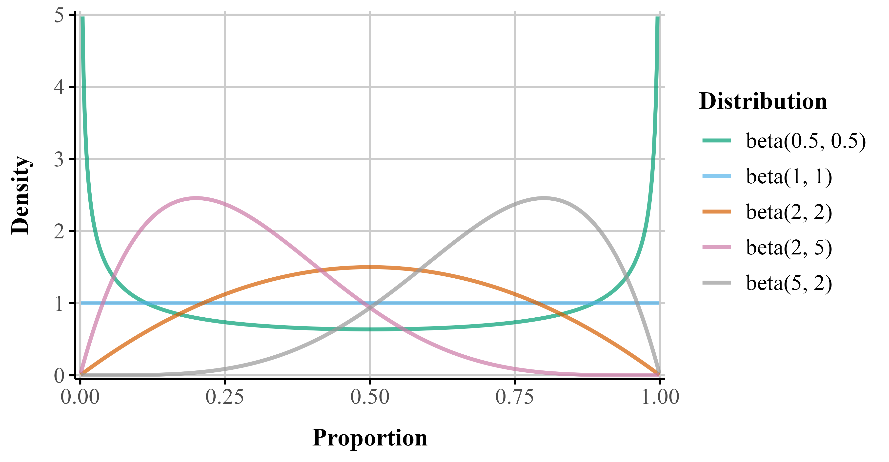
While the standard parameterization of the beta distribution uses \alpha and \beta, a reparameterization to a mean (\mu) and precision (\phi) is more useful for regression models. The mean represents the expected value of the distribution, while the precision, which is inversely related to variance, reflects how concentrated the distribution is around the mean, with higher values indicating a narrower distribution and lower values indicating a wider one. The connections between the beta distribution’s parameters are shown in Equation 1. Importantly, the variance depends on the average value of the response because uncertainty intervals need to adjust for how close the value of the response is to the boundary.
\begin{aligned}[t] \text{Shape 1:} && a &= \mu \phi \\ \text{Shape 2:} && b &= (1 - \mu) \phi \end{aligned} \qquad\qquad\qquad \begin{aligned}[t] \text{Mean:} && \mu &= \frac{a}{a + b} \\ \text{Precision:} && \phi &= a + b \\ \text{Variance:} && var &= \frac{\mu \cdot (1 - \mu)}{1 + \phi} \end{aligned} \tag{1}
Thus, beta regression allows modeling both the mean and precision of the outcome distribution. To ensure that \mu stays between 0 and 1, we apply a link function, which allows linear modeling of the mean on an unbounded scale. A common link-function choice is the logit, but other functions such as the probit or complementary log-log are possible.
The logit function, \text{logit}(\mu) = \log \left( \frac{\mu}{1 - \mu} \right) links the mean to log-odds which are unbounded, making linear modeling possible. The logit here no longer carries the same literal odds interpretation because there are no corresponding counts of “successes” and “failures.” Instead, the logit transform here simply maps the mean of the distribution to the real line. The inverse of the logit, called the logistic function, maps the linear predictor \eta back to the original scale of the data \left(\mu = \frac{1}{1 + e^{-\eta}}\right). The coefficients describe how predictors shift the average proportion on the logit scale. Similarly, the strictly positive dispersion parameter is usually modeled through a log link function, ensuring it remains positive.
By accounting for the observations’ natural limits and non-constant variance, the beta distribution is useful in psychology where outcomes like performance rates or response scales frequently exhibit these features.
Beta regression models can be estimated using either frequentist or Bayesian methods. In this tutorial, we adopt a Bayesian framework because it facilitates the estimation and interpretation of a wide range of models that may be difficult to fit using frequentist approaches (Gelman et al., 2013; Johnson et al., 2022; McElreath, 2020). Additionally, the use of Bayesin statistics in psychology has been steadily growing (Pfadt et al., 2025). In principle, frequentist methods like maximum likelihood can be framed as Bayesian models with uninformative priors,4 and as a result, the modeling perspective we put forward in this paper can apply to either approach. Nonetheless, we note that in non-linear and hierarchical models, frequentist estimation may require additional adjustments such as bootstrapping to obtain proper uncertainty intervals, whereas Bayesian modeling handles these extensions more naturally via exploration of the full joint posterior distribution.5 Additionally, some of the models we present may require customized maximum likelihood estimation routines whereas all of the models we present can be well-formulated and estimated in the same Bayesian context, which increases comparability.
There are several important differences between the Bayesian analyses used here and the frequentist methods more commonly applied. First, frequentist statistics treats model parameters as fixed but unknown quantities that are estimated by maximizing the likelihood of the observed data. In contrast, Bayesian inference treats parameters as random variables and represents uncertainty about them using probability distributions.
As a result, both estimation and inference differ from standard frequentist approaches. To estimate models, the {brms} package relies on Stan, which uses Markov Chain Monte Carlo (MCMC) algorithms. By default, {brms} uses the No U-Turn Sampler (NUTS) to draw samples from the posterior distribution and runs four chains with 2,000 iterations each. The first 1,000 iterations per chain are used for warmup (or adaptation) and are discarded. The remaining 1,000 iterations per chain are retained as posterior draws, yielding 4,000 total post-warmup samples across all chains. We note that for exploratory work, a far smaller number of draws (as low as 500 draws) can yield good estimates, conditional on the convergence diagnostics that we describe later.
From these posterior draws, we compute summary statistics such as the posterior mean (analogous to a frequentist point estimate), standard deviation (analogous to the standard error in that it provides a quantification of uncertainty around the point estimate), and the 95% credible interval (Cr.I.). While the frequentist CI and the Cr.I are both measures of uncertainty, a credible interval has a direct probabilistic interpretation: the 95% Cr.I. represents the range within which 95% of the posterior distribution lies, given the data, likelihood, and the prior. A common—but somewhat misguided—practice is to use credible intervals for hypothesis testing (e.g., by checking whether the interval includes zero) (Nicenboim et al., 2025; Veríssimo, 2025). Cr.Is are derived under the assumed model and do not explicitly compare a null hypothesis to an alternative. Instead, they quantify uncertainty about the parameter: wide intervals indicate greater uncertainty, whereas narrow intervals indicate greater precision. Finally, Bayesian inference does not rely on p-values (you will see this absent from the output). Instead, inference is based on the full posterior distribution, allowing researchers to directly assess the magnitude, direction, and uncertainty of effects.
In addition, an important part of Bayesian analyses is prior specification. Priors encode our assumptions about plausible parameter values before observing the data and allow the model to regularize estimates, especially when data are sparse or parameters are weakly identified. To help bridge the conceptual gap for users more familiar with frequentist models, we begin with the default priors (flat/non-informative, or weakly informative in some cases) provided by {brms}. These priors are intentionally non-informative, and in many applications produce results that closely align with frequentist estimates, while still offering the flexibility and interpretive advantages of a Bayesian framework. We strongly urge readers to consider prior specification strongly in all their work (see Stan Development Team, 2024).
To ease readers into Bayesian data analysis we provide a metric known as the probability of direction (pd), which reflects the probability that a parameter is positive or negative. When a uniform prior is used (all values equally likely in the prior), pds of 95%, 97.5%, 99.5%, and 99.95% corresponds approximately to two-sided p-values of .10, .05, .01, and .001 (i.e., pd ≈ 1 − p/2 for symmetric posteriors with weak/flat priors) (see Figure 2 for an illustrative comparison). For directional hypotheses, the pd can be interpreted as roughly equivalent to one minus the p-value (Marsman & Wagenmakers, 2016). For readers interested in frequentist approaches to beta regression, we provide an appendix supplement containing code for fitting beta regression models within a frequentist framework.
# --- parameters ---
pd <- 0.95
alpha_two <- 2 * (1 - pd) # matching two-sided alpha
mu <- qnorm(pd) # shift so P(X > 0) = pd for N(mu, 1)
lim <- c(-4, 6)
# --- Posterior-like panel ---
post <- ggplot(data.frame(x = lim), aes(x)) +
# full curve
stat_function(
fun = dnorm,
args = list(mean = mu, sd = 1),
color = "black",
size = 1
) +
# pd region (blue)
stat_function(
fun = dnorm,
args = list(mean = mu, sd = 1),
xlim = c(0, lim[2]),
geom = "area",
fill = "blue",
alpha = 0.3
) +
# remaining region (red)
stat_function(
fun = dnorm,
args = list(mean = mu, sd = 1),
xlim = c(lim[1], 0),
geom = "area",
fill = "red",
alpha = 0.3
) +
geom_vline(xintercept = 0, color = "black", linewidth = 0.8) +
labs(
title = "Posterior (illustrative Normal)",
subtitle = paste0("pd = ", round(pd * 100), "%"),
x = "",
y = "Density"
) +
coord_cartesian(xlim = lim, ylim = c(0, 0.45)) +
theme_publication()
# --- Frequentist panel ---
z_lo <- qnorm(alpha_two / 2)
z_hi <- qnorm(1 - alpha_two / 2)
freq <- ggplot(data.frame(x = lim), aes(x)) +
# full curve
stat_function(
fun = dnorm,
args = list(mean = 0, sd = 1),
color = "black",
size = 1
) +
# lower rejection tail (red)
stat_function(
fun = dnorm,
args = list(mean = 0, sd = 1),
xlim = c(lim[1], z_lo),
geom = "area",
fill = "red",
alpha = 0.3
) +
# upper rejection tail (red)
stat_function(
fun = dnorm,
args = list(mean = 0, sd = 1),
xlim = c(z_hi, lim[2]),
geom = "area",
fill = "red",
alpha = 0.3
) +
geom_vline(xintercept = c(z_lo, z_hi), color = "red", linewidth = 0.8) +
geom_vline(xintercept = 0, color = "black", linewidth = 0.8) +
labs(
title = "Frequentist sampling under H0 (N(0,1))",
subtitle = paste0("two-sided α = ", signif(alpha_two, 2)),
x = "Parameter Values",
y = "Density"
) +
coord_cartesian(xlim = lim, ylim = c(0, 0.45)) +
theme_publication()
# --- Stack the plots ---
post / freqFigure 2
A Bayesian posterior distribution (assuming a uniform prior) centered at a point estimate chosen so that the probability of direction (pd) equals 0.95, and a frequentist sampling distribution (under the null; centered at 0). In the Bayesian posterior distribution, the blue area represents the pd, and the red area represents the remaining 1 − pd of the distribution. In the frequentist sampling distribution, the red tail areas represent the rejection region at \alpha = 0.10. In this example, the posterior mean lies exactly at the 1 - \frac{\alpha}{2} quantile of the null sampling distribution. For symmetric posteriors with flat priors, the pd is numerically equivalent to the one-sided p-value.
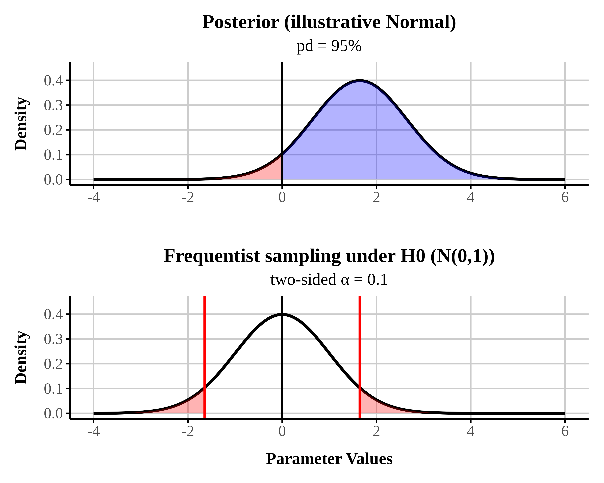
For reasons of space, we refer readers unfamiliar to Bayesian data analysis to several existing books on the topic (Gelman et al., 2013; Kruschke, 2015; McElreath, 2020). In addition, we assume readers are familiar with R, but those in need of a refresher should find Wickham et al. (2023) useful.
Throughout this tutorial, we analyze data from a memory experiment examining whether the fluency of an instructor’s delivery affects recall performance and metamemory (i.e., judgements of learning (JOLs)) (Wilford et al., 2020, Experiment 1A and 1B). Instructor fluency—marked by expressive gestures, dynamic vocal tone, and confident pacing—has been shown to influence students’ perceptions of learning, often leading learners to rate fluent instructors more favorably (Carpenter et al., 2013). However, previous research suggests that these impressions do not reliably translate into improved memory performance (e.g., Carpenter et al., 2013; Toftness et al., 2017; Witherby & Carpenter, 2022). In contrast, Wilford et al. (2020) found that participants actually recalled more information after watching a fluent instructor compared to a disfluent one. This surprising finding makes the dataset a compelling case study for analyzing proportion data, as recall was scored out of 10 possible idea units per video.
In Experiment 1A, ninety-six participants watched two short instructional videos, each delivered either fluently or disfluently. Fluent videos featured instructors with smooth delivery and natural pacing, while disfluent videos included hesitations, monotone speech, and awkward pauses. After a distractor task, participants completed a free recall test, writing down as much content as they could remember from each video within a three-minute window. Their recall was then scored for the number of idea units correctly remembered.
# get data here from project folder
fluency_data <- read_csv(here::here("manuscript", "data", "fluency_data.csv"))Our primary outcome variable is the proportion of idea units recalled on the final test, calculated by dividing the number of correct units by 10. We show a sample of these data in Table 1. The dataset can be retreived from the project repository referenced above(Listing 1). Because this is a bounded continuous variable (i.e., it ranges from 0 to 1), it violates the assumptions of typical linear regression models that assume normally distributed residual errors. Despite this, it remains common in psychological research to analyze proportion data using models that assume normality. In what follows, we re-analyze the data from Wilford et al. (2020) first using a Gaussian model (similar to the t-test used in the original paper) and then use beta regression and highlight how it can improve our inferences.
Table 1
Four observations from Wilford et al. (2020). Accuracy refers to the proportion of correctly recalled idea units.
| Participant | Fluency | Accuracy |
|---|---|---|
| 64 | Disfluent | 0.10 |
| 30 | Fluent | 0.60 |
| 12 | Fluent | 0.10 |
| 37 | Fluent | 0.35 |
In their original analysis of Experiment 1A, Wilford et al. (2020) compared memory performance between fluent and disfluent instructor conditions using a traditional independent-samples t-test on mean accuracy for 96 participants. In Listing 2 we provide the code to reproduce their results using a frequentist linear model. We model final test mean accuracy—the proportion of correctly recalled idea units across the videos—as the dependent variable, assuming a Gaussian distribution. There is one predictor—instructor fluency—with two levels: Fluent and Disfluent. We use treatment (dummy) coding, which is the default in R. This coding scheme sets the first level of a factor (in alphabetical order) as the reference level. In this case, the Disfluent condition is the reference (Intercept), and the coefficient (FluencyFluent) reflects the contrast between fluent and disfluent instructor conditions.
flu_org <- lm(Accuracy ~ Fluency, data = fluency_data)summary(flu_org)
Call:
lm(formula = Accuracy ~ Fluency, data = fluency_data)
Residuals:
Min 1Q Median 3Q Max
-0.34091 -0.14091 -0.04091 0.09327 0.74327
Coefficients:
Estimate Std. Error t value Pr(>|t|)
(Intercept) 0.25673 0.02850 9.007 0.0000000000000238 ***
FluencyFluent 0.08418 0.04210 1.999 0.0485 *
---
Signif. codes: 0 '***' 0.001 '**' 0.01 '*' 0.05 '.' 0.1 ' ' 1
Residual standard error: 0.2055 on 94 degrees of freedom
Multiple R-squared: 0.04079, Adjusted R-squared: 0.03058
F-statistic: 3.997 on 1 and 94 DF, p-value: 0.04846When Listing 2 is run, the summary output () shows there is a significant difference between Fluent and Disfluent conditions (M = .08, SE = .04), t(94) = 2.00, p = .048 (see Figure 3), consistent with the results reported by Wilford et al. (2020).
fluency_data |>
ggplot(aes(x = Accuracy, y = Fluency, fill = Fluency)) +
stat_dotsinterval(
point_interval = mean_qi,
show_interval = FALSE
) +
stat_summary(
fun = mean,
geom = "point",
shape = 18, # filled diamond
linewidth = 5,
size = 5,
color = "black",
aes(fill = Fluency)
) +
scale_x_continuous(labels = label_percent()) +
scale_y_discrete(NULL, expand = expansion(mult = 0.1)) +
scale_fill_okabe_ito(breaks = NULL) +
theme_publication()Figure 3
Dot plot depicting accuracy distributions for the Fluent and Disfluent conditions. Each condition shows individual data points and mean (diamond))
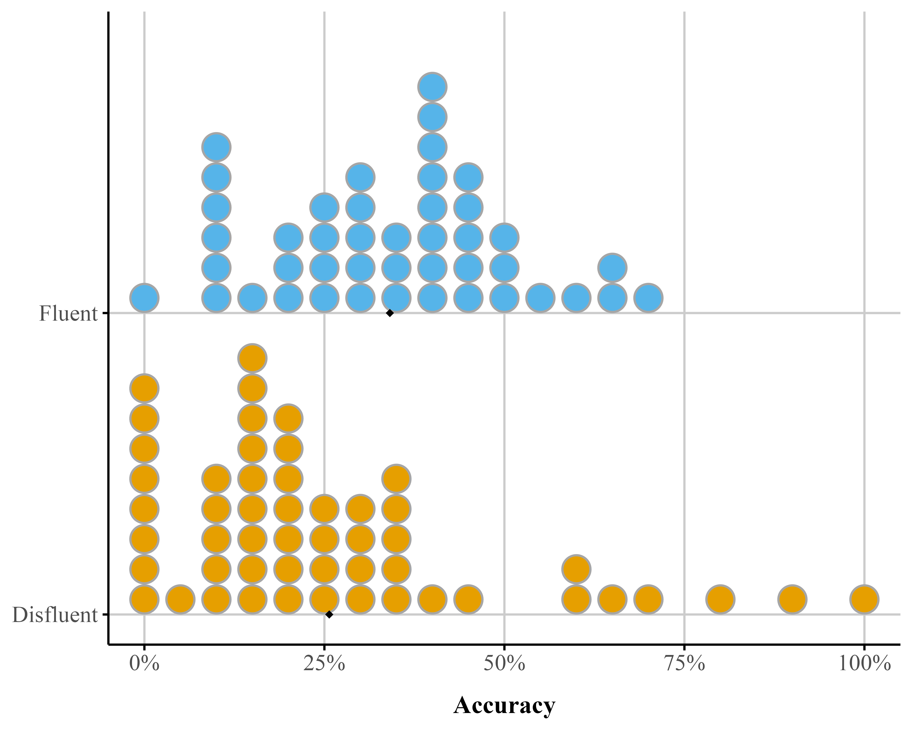
We will now replicate this analysis in {brms}.
We first start by loading the {brms} (Bürkner, 2017) and {cmdstanr} (Gabry et al., 2024) packages (Listing 3). We use the cmdstanr backend for Stan (Team, 2023) because it’s faster than the default used to run models (i.e., rstan),6 though all of these models can also be fit with brms defaults.
library(brms)
library(cmdstanr)bayes_reg_model <- brm(
Accuracy ~ Fluency,
data = fluency_data,
family = gaussian(),
seed = 666,
file = here::here("manuscript", "models", "model_reg_bayes")
)We fit the model using the brm() function from the {brms} package (Listing 4). Although not shown here, we ran the models using four chains (the default), executed in parallel across four cores. When the model is run in Listing 4, the model summary output will appear in the R console. The output from bayes_reg_model shows each parameter’s posterior summary: The posterior distribution’s mean and standard deviation (analogous to the frequentist standard error) and its 95% credible interval (Cr.I), which indicate the 95% of the most credible parameter values. In {brms}, the reported Cr.I is an equal-tailed interval, meaning that the probability mass excluded from the interval is split equally between the lower and upper tails. Additionally, the output provides numerical diagnostics of the sampling algorithm’s performance. The potential scale reduction factor, the Brooks-Gelman-Rubin scale reduction factor (\hat{R}), should be close to 1 (>= 1.01 signals issues), indicating that the chains have mixed well both within and between chains. Effective sample size (ESS) metrics indicate how much independent information is contained in the posterior draws; larger values are generally better, especially relative to the total number of post-warmup draws. By default, {brms} typically retains 4,000 post-warmup draws. An ESS of at least 400 (approximately 100 per chain when running four chains) is needed for \hat{R} and the other convergence diagnostics themselves to be reliable (Vehtari et al., 2021). This threshold is about diagnosing convergence, not about how precisely the posterior summaries are estimated. How large the ESS needs to be for reporting a quantity of interest (e.g., a posterior mean or the endpoints of a credible interval) depends on how many digits you want to report: the Monte Carlo standard error (MCSE), which shrinks as ESS grows, should be small relative to the last reported digit (see Section 11.6 of Gelman et al., 2026). For example, for a roughly normal posterior with standard deviation 1, an ESS of about 2,000 makes the second significant digit of the posterior mean fairly stable, whereas an ESS of about 100 is often enough for one significant digit (but still not enough for reliable convergence diagnostics). MCSEs can be obtained with {posterior}, for example summarise_draws(draws, default_mcse_measures()). For the models presented in this paper, convergence is straightforward for standard Gaussian models, but these diagnostics remain important to inspect in practice. Note that models fit with {brms} report potential sampling or model-fitting issues as warnings by default and should be dealt with accordingly.
Our main question of interest is: what is the causal effect of instructor fluency on final test performance? In order to answer this question, we will have to look at the output summary produced by Listing 4 (also see Table 8 under Bayesian LM). the Intercept refers to the posterior mean accuracy in the disfluent condition, M = 0.257 , as fluency was dummy-coded. The fluency coefficient (FluencyFluent) reflects the mean posterior difference7 in recall accuracy between the fluent and disfluent conditions: b = 0.084. The 95% Cr.I for this estimate spans from 0 to 0.169. These values are shown in the “95% Cr.I” columns of the output. These results closely mirror the findings reported by Wilford et al. (2020) (Experiment 1A).
summary(bayes_reg_model) Family: gaussian
Links: mu = identity
Formula: Accuracy ~ Fluency
Data: fluency_data (Number of observations: 96)
Regression Coefficients:
Estimate Est.Error l-95% CI u-95% CI Rhat Bulk_ESS Tail_ESS
Intercept 0.26 0.03 0.20 0.31 1.00 3943 2526
FluencyFluent 0.08 0.04 0.00 0.17 1.00 3717 2897
Further Distributional Parameters:
Estimate Est.Error l-95% CI u-95% CI Rhat Bulk_ESS Tail_ESS
sigma 0.21 0.02 0.18 0.24 1.00 3689 2656The output also includes the effective sample size (ESS) and \hat{R} values, both of which fall within acceptable ranges, indicating good model convergence. Throughout the tutorial, we focus primarily on posterior mean estimates and their 95% credible intervals. In addition, we report the pd measure, provided by the {bayestestR} package (Makowski, Ben-Shachar, Chen, et al., 2019; Makowski, Ben-Shachar, & Lüdecke, 2019). This measure offers an intuitive parallel to p-values, which many readers may find familiar. For example, the fluency effect has a pd of .977, indicating a high probability that the effect is positive rather than negative.
Another option to examine effect existence to compare competing hypotheses directly using a Bayes factor (BF). A BF quantifies the relative evidence the data provide for one hypothesis over another. Usually we compare an alternative model (there is an effect) to a null model (there is no effect). A BF > 1 means the alternative model is preferred over null; a BF < 1 means the null is preferred over the alternative. Using some heuristics, a BF > 3 provides modest evidence for an effect where BF > 10 provides strong evidence for an effect (Jeffries, 1961; Kass & Raftery, 1995). Unlike a p-value, a BF is inherently comparative and depends critically on the prior distribution placed over the parameter of interest under each model. The BF is the ratio of likelihoods for the two models being compared–the likelihood defines what each model predicts, and the BF rewards whichever model predicted the observed data better. For directional hypotheses, this prior sensitivity is relatively modest, because both models share the same likelihood structure. For point-null hypotheses, however, the prior under the alternative must be specified carefully, as we discuss below.
hypothesis() function from brms
# test non-zero effect
fluency_effect_BF <- hypothesis(bayes_reg_model, "FluencyFluent > 0")To test the strength of evidence for the effect, we can compare a model where the effect is greater than 0 to one where it is less than 0 using the hypothesis() function in {brms} (Listing 5). The resulting evidence ratio (ER) column contains the Bayes factor for this directional hypothesis, comparing the model \delta > 0 against \delta < 0. The BF for the fluency effect is 39, providing very strong evidence that the effect is positive and not 0. If we instead wanted to test a point-null hypothesis—that is, whether the effect is equivalent to exactly 0—we would need to specify non-default priors and rely on the Savage-Dickey method, which evaluates the ratio of the posterior to the prior density at the null value and is therefore directly sensitive to that prior choice. Without specifying a weak or strong prior, one cannot calculate a BF. In {brms} the default prior for fixed effects are flat and uninformative.
Importantly, pd and BFs do not, by themselves, indicate whether an effect is meaningfully large; rather, they quantify evidence concerning the direction of an effect or the hypotheses being compared. To evaluate practical significance, readers can consider the Region of Practical Equivalence (ROPE) alongside the Cr.Is (Kruschke, 2015) . Unlike a test of a point null hypothesis, such as an effect of exactly zero, the ROPE defines a range of values considered too small to be substantively important. Ideally, ROPE boundaries should be informed by theory and by estimates derived from a mathematical or computational model of the processes generating the phenomenon under study. However, such mechanistic or process-based models are often unavailable or insufficiently detailed to provide numerically precise boundaries. As a rule of thumb (see Kruschke, 2018), an effect may be considered practically equivalent to the negligible range when more than 95% of the posterior distribution lies within the ROPE, whereas it may be considered meaningfully different when less than 5% lies within the ROPE. These thresholds are conventional and ultimately arbitrary rather than universal decision criteria, and intermediate cases are typically labeled undecided.
The rope() function in the {bayestestR} package computes the proportion of the posterior within the ROPE to facilitate this evaluation. By default, from bayesian models fit via {brms}, the package determines a ROPE based on the data (roughly reflecting “negligible” effects), but these defaults should be used cautiously. The choice of ROPE should always be guided by theoretical considerations, previous research, and the substantive context of the study. In our case, we can instead anchor the ROPE in prior empirical work. Specifically, Carpenter et al. (2013) (the study Wilford et al. (2020) is based on) reported a difference in actual learning of approximately 4% between conditions in Experiment 1. Other examinations of this effect have also yielded differences that are very close to zero. This suggests that a ROPE of approximately ±4% is reasonable for the present context. Effects falling within this range can be considered practically equivalent (i.e., negligible), whereas effects exceeding this range would be interpreted as meaningfully different.
In Listing 6, we show how to compute this using {bayestestR}. Running the function with our rope range of ±4% suggests that 13% lies within the default ROPE (indicating inconclusive results) (see Figure 4). Taken together, the effect likely exists (pd and BF), but whether its magnitude is meaningful remains inconclusive.
bayes_reg_model obect using rope function from {bayestestR}
brms_rope <- bayestestR::rope(
bayes_reg_model,
ci = .95, # Cr.I
ci_method = "ETI", # equal tail Cr.I
range = c(-0.04, 0.04) # ROPE value
)# echo: false
p <- plot(brms_rope)
# Extract the ROPE percentage
rope_percentage <- round(brms_rope$ROPE_Percentage[2], 3) * 100
p_annotated <- p +
annotate(
"text",
x = 0,
y = Inf,
label = paste0(rope_percentage, "%"),
vjust = 1.2,
hjust = 0.5,
size = 4,
color = "black",
fontface = "bold"
) +
theme_publication() +
scale_color_okabe_ito() +
scale_fill_okabe_ito() +
labs(
color = "Cr.I",
fill = "Cr.I"
)
p_annotatedFigure 4
Posterior distribution for the fluency effect showing the ROPE(shaded area) with 95% credible interval (orange) and 100% credible interval (blue). The percentage indicates the proportion of the posterior within the ROPE.
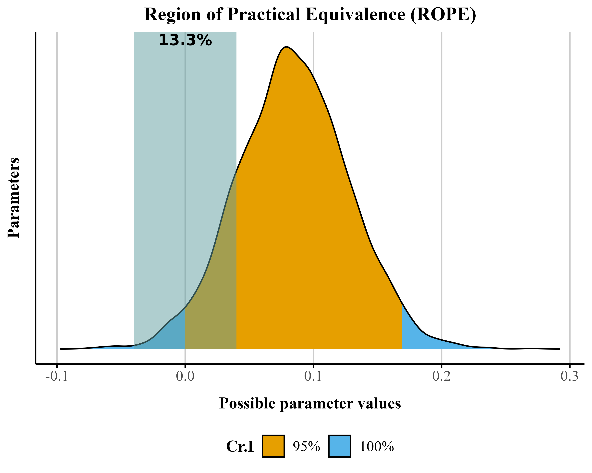
Wilford et al. (2020) observed that instructor fluency impacts actual learning, using a standard t-test on the mean accuracy. But recall this approach assumes normality of residuals and homoskedasticity. These assumptions are unrealistic when the response values approach the scale boundaries (Sladekova & Field, 2024). Does the data we have meet those assumptions? We can use the function check_model() from {easystats} (Lüdecke et al., 2022) to check our assumptions easily. The code in Listing 7 produces Figure 5. We can see some issues with our model. Specifically, there appears to be violations of constant variance across the values of the scale (homoskedasticity). In plain terms, this type of model mis-specfication means that a standard OLS model can predict non-sensical values outside the bounds of the scale.
check_model() from {easystats} package .
check_model(bayes_reg_model, check = c("homogeneity", "qq"))Figure 5
Two assumption checks for our OLS model: Normality (right) and Homoskedasticity (left)
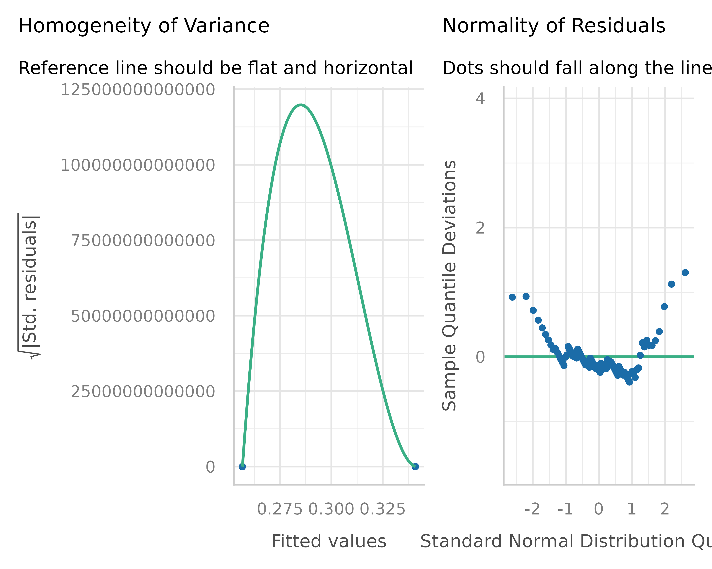
We can also examine how well the data fits the model by performing a posterior predictive check using the pp_check() function from {brms}. A posterior predictive check involves looking at multiple model-predicted values and plotting them against the observed data. Ideally, the predicted values (the light blue lines) should show reasonable resemblance with the observed data (dark blue line). In our example (see Figure 12 (A)) the model-predicted density is slightly too peaked and narrow compared to the data. In addition, some of the predicted accuracy values are negative.
It is important to note that there are several justifiable approaches for addressing the distributional issues observed in the data. For instance, one could analyze median accuracy instead of the mean, use some type of robust estimator for heterogeneity, or apply non-parametric methods to relax some of the model assumptions (e.g., a binomial logistic model looking at idea units recalled over total idea units). Alternatively, we can address these issues directly by fitting distributional models (Kneib et al., 2023; Kruschke, 2013). A key advantage of distributional models is that they are not limited to modeling only the mean or median of the outcome, but can also model parameters such as the variance (or other shape parameters) as functions of predictors. This allows examining how instructor fluency may influence not only average performance, but also the variability in performance across students. If we wanted to keep our mean accuracy variable and continue to use a Guassian model, we could use a distributional approach and model the effect of fluency on \sigma.
Given the outcome variable is proportional, another solution would be to run a beta regression model. Again, we can create the beta regression model in {brms}. In {brms}, we model each parameter independently. Recall from the introduction that in a beta model we model two parameters–\mu and \phi. Again we do this by using the bf() function from {brms} (Listing 8). We specify two formulas, one for \mu and one for \phi and store it in the model_beta_bayes object below. In the below bf() call, we are modeling accuracy as a function of fluency only for the \mu parameter. For the \phi parameter, we are only modeling the intercept value. This is saying that the variability of the outcome around \mu does not change as a function of fluency.
To run our beta regression model, we need to exclude 0s and 1s in our data set. If we try to run a model with our data data_fluency we get an error: Error: Family 'beta' requires response greater than 0. This is because the beta distribution only supports observations in the 0 to 1 interval excluding exact 0s and 1s. We need make sure there are no 0s and 1s in our dataset.
The dataset contains nine 0s and one 1. One approach is to nudge our 0s towards .01 and our 1s to .99, or apply a special formula (Smithson & Verkuilen, 2006) so values fall within the [0, 1] interval. We implore readers not to engage in this practice. Kubinec (2022) showed that this practice can result in serious distortion of the outcome as the sample size 𝑁 grows larger, resulting in ever smaller values that are “nudged”. Because the beta distribution is a non-linear model of the outcome, values that are very close to the boundary, such as 0.00001 or 0.99999, will be highly influential outliers. To run this beta model we will remove the 0s and 1s in order to obtain a valid dataset for the beta regression model, though we note that we are doing so to motivate the later models we present rather than as a recommended practice of filtering data. If we remove the boundary data, we should also model this binary data separately as a logistic regression–though of course we cannot jointly model the logit model with plain beta regression. Later in this article we will show how to jointly model these scale end points with the rest of the data. The model from Listing 8 uses a transformed data_fluency object (called data_beta) where 0s and 1s are removed. When we run this code we should not get an error.
# set up model formual
model_beta_bayes <- bf(
Accuracy ~ Fluency, # fit mu model
phi ~ 1 # fit phi model
)
# remove 0s and 1s
data_beta <- fluency_data |>
filter(
Accuracy != 0,
Accuracy != 1
)
beta_brms <- brm(
model_beta_bayes,
data = data_beta,
family = Beta(),
file = here::here("manuscript", "models", "model_beta_bayes_reg_01")
)In Table 8, under the beta regression column, the coefficient with b_ represents how fluency of instructor influences the \mu parameter estimates (which is the mean of the distribution here). These coefficients are linear on the logit-scale, but not on the raw accuracy scale. The intercept term (b_Intercept) represents the log odds of the mean on accuracy for the fluent instructor. Log odds that are negative indicate that a “success” (like getting the correct answer) is less likely to happen than not happen. Similarly, regression coefficients in log odds forms that are negative indicate that an increase in that predictor leads to a decrease in the predicted probability of a “success”.
Parameter estimates can be difficult to interpret, and researchers can instead discuss effects on the actual outcome scale (in this case the 0-1 scale). The logit link allows us to transform back and forth between the scale of a linear model and the nonlinear scale of the outcome, which is bounded by 0 and 1. By using the inverse of the logit, we can easily transform our linear coefficients to obtain average effects on the scale of the proportions or percentages, which is usually easier to interpret. In a simple case, we can do this manually, but when there are many factors in your model this can be quite complex.
In our example, we can use the plogis() function in base R to convert estimates from the logit scale to the probability scale. The intercept of our model is -0.918, which reflects the logit of the mean accuracy in the disfluent condition. If the estimated difference between the fluent and disfluent conditions is 0.24 on the logit scale, we first add this value to the intercept value (-0.918) to get the logit for the fluent condition: -0.83 + 0.20 = -0.63. We then use plogis() to convert both logit values to probabilities (Fluent = 35%, Disfluent = 30%).
In a Bayesian framework with more than one predictor and complex models, back-transformations can be quite cumbersome. To help us work with the data and extract predictions from our model and visualize them we will use a package called {marginaleffects} (Arel-Bundock et al., 2024) (see Listing 9). To get the proportions for each of our categorical predictors on the \mu parameter we can use the function from the package called avg_predictions(). These are displayed in Table 2. These probabilities match what we calculated above.
library(marginaleffects)
options(marginaleffects_posterior_center = mean) # make sure returns meanmodel_beta_bayes_disp <- bf(
Accuracy ~ Fluency, # Model of the mean
phi ~ Fluency # Model of the precision
)
beta_brms_dis <- brm(
model_beta_bayes_disp,
data = data_beta,
family = Beta(),
file = here::here("manuscript", "models", "model_beta_bayes_dis_run01")
)avg_predictions(
beta_brms_dis,
# need to specify the levels of the categorical predictor
variables = "Fluency"
)Table 2
Predicted probabilities for each level of Fluency (\mu).
| Fluency | Mean | 95% Cr.I |
|---|---|---|
| Disfluent | 0.305 | [0.251, 0.363] |
| Fluent | 0.349 | [0.304, 0.399] |
For the Fluency factor, we can interpret the estimates under the Mean column as a proportion or percentage. That is, participants who watched the fluent instructor scored on average 35% on the final exam compared to 30% for those who watched the disfluent instructor. We can also visualize these from {marginaleffects} using the plot_predictions() function (see Listing 12).
plot_predictions() from {marginaleffects}
beta_plot <- plot_predictions(beta_brms_dis, by = "Fluency")The plot_predictions() function will only display the point estimate with the 95% credible interval. However, Bayesian estimation methods generate distributions for each parameter. This approach allows visualizing full uncertainty estimates beyond points and intervals. Using the {marginaleffects} package, we can obtain samples from the posterior distribution with the posterior_draws() function (see Listing 13). We can then plot these results to illustrate the range of plausible values for our estimates at different levels of uncertainty (see Figure 6).
# Add a model identifier to each dataset
pred_draws_beta <- avg_predictions(beta_brms_dis, variables = "Fluency") |>
posterior_draws()# Plot both models
ggplot(pred_draws_beta, aes(x = draw, y = Fluency, fill = Fluency)) +
stat_halfeye(.width = c(.5, .8, .95), alpha = 0.7) +
scale_fill_okabe_ito() +
scale_x_continuous(labels = label_percent()) +
labs(
x = "Accuracy",
y = "Fluency",
caption = "50%, 80% and 95% credible intervals shown in black"
) +
geom_vline(xintercept = 0, color = "black", linetype = "solid", size = 1.2) +
scale_y_discrete(expand = expansion(mult = 0.1)) +
theme_publication() +
theme(legend.position = "none")Figure 6
Predicted probablity posterior distributions by instructor fluency
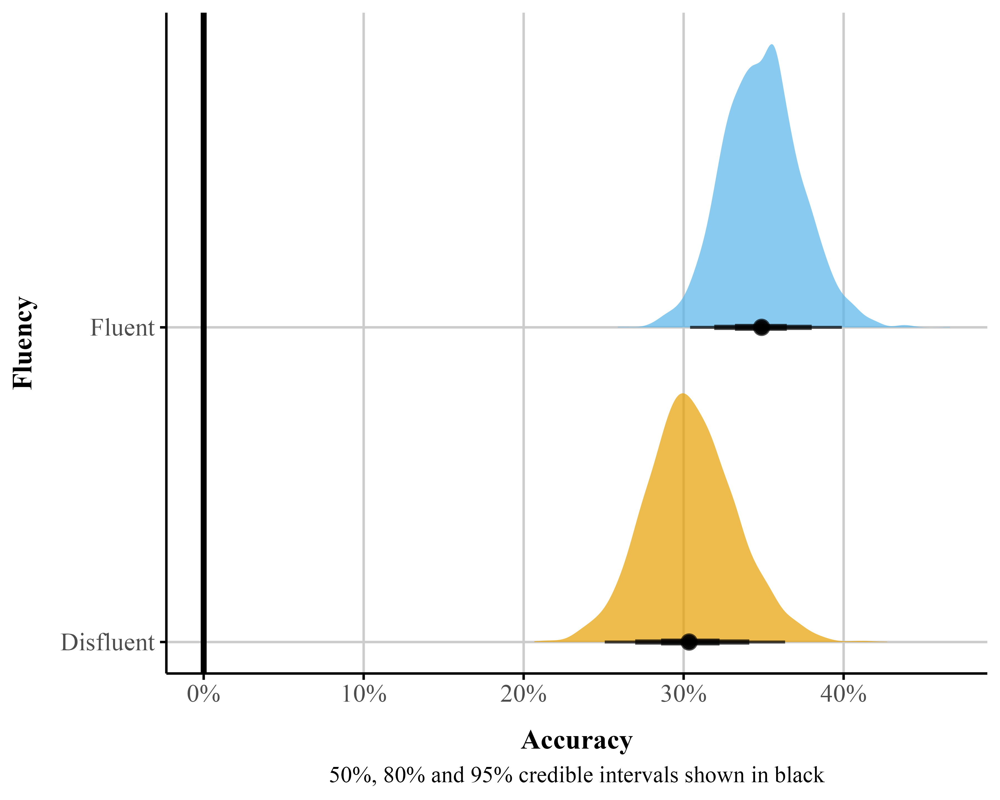
Marginal effects offer an interpretable way to quantify how changes in a predictor influence an outcome, while holding other factors constant in a specific manner. In recent years, there has been a thrust to move away from reporting regression coefficients alone, focusing instead on estimates that are easier to interpret and communicate—particularly in non-linear models (McCabe et al., 2021; Rohrer & Arel-Bundock, 2026). Technically, marginal effects are computed as partial derivatives for continuous variables or as finite differences for categorical (and sometimes continuous) predictors, depending on the structure of the data and the research question. Substantively, these procedures translate raw regression coefficients into quantities that reflect changes in the bounded outcome—for example, an x% change in the value of a proportion.
There are several types of marginal effects, and their computation can vary across software packages. For example, the popular {emmeans} package (Lenth, 2025) computes marginal effects by holding all predictors at their means (marginal effects at the mean; MEM). In this tutorial, we use the {marginaleffects} package (Arel-Bundock et al., 2024), which by default computes average marginal effects (AMEs). AMEs are based on counterfactual predictions: the dataset is conceptually replicated across all unique values of the predictor of interest, predictions are generated for each row under each counterfactual scenario, and the resulting differences are then averaged. This approach maintains a strong connection to the observed data—because predictions are made using each participant’s actual values—while providing a clear and interpretable summary of the effect of interest.
One practical use of AMEs is to estimate the average difference between two groups or conditions which corresponds to the average treatment effect (ATE). Using the avg_comparisons() function in the {marginaleffects} package (Listing 14), we can compute this quantity directly. By default, the function returns the discrete difference between groups. When we take the difference in proportions between two groups it is called the risk difference. Depending on the audience and modeling goals, the function can also produce alternative effect size metrics, such as odds ratios or risk ratios. This flexibility makes it a powerful approach for summarizing and communicating regression results.
avg_comparisons()
# get risk difference by default
beta_avg_comp <- avg_comparisons(
beta_brms_dis,
variables = "Fluency", # counterfactural difference
comparison = "difference"
)Table 3
Fluency difference (\mu)
| Contrast | Mean | 95% Cr.I | pd |
|---|---|---|---|
| Fluent - Disfluent | 0.045 | [-0.031, 0.115] | 0.88 |
Table 3 presents the estimated difference for the Fluency factor (Mean column). The difference between the fluent and disfluent conditions is 0.044, indicating that participants who watched a fluent instructor scored, on average, approximately 4.4 percentage points higher on the final recall test than those who watched a disfluent instructor. However, the 95% credible interval spans from -0.031 to 0.115, suggesting we cannot rule out the possibility of a null or weakly negative effect. The pd of 0.88indicates that 87% of the posterior distribution is positive, with the remaining 13% consistent with a null or negative effect. In the basic regression model above, the ROPE value was extracted using the {bayestestR} package. The ROPE can also be obtained using the {marginaleffects} package by specifying the equivalence bounds in avg_comparisons(). Running the code in Listing 15 returns a ROPE probability of 23%, indicating that there is insufficient evidence to conclude that the effect exceeds 4% or is practically equivalent to 0.
# get risk difference by default
beta_avg_comp_rope <- avg_comparisons(
beta_brms_dis,
variables = "Fluency", # counterfactural difference
comparison = "difference",
equivalence = c(-0.04, 0.04)
)The other component we need to pay attention to is the dispersion or precision parameter coefficients labeled as phi in Table 8. Specifically, \phi in beta regression tells us about the variability of the response variable around its mean. Specifically, a higher parameter value indicates a narrower distribution, reflecting less variability. Conversely, a lower dispersion parameter suggests a wider distribution, reflecting greater variability. The main difference between a dispersion parameter and the variance is that the dispersion has a different interpretation depending on the value of the outcome, as we show below. The best way to understand dispersion is to examine visual changes in the distribution as the dispersion increases or decreases.
Understanding the dispersion parameter helps us gauge the variability of our predictions and the consistency of the response variable. In beta_brms we only modeled the dispersion of the intercept. When \phi is not specified, the intercept is modeled by default (see Table 8). It represents the overall dispersion in the outcome across all conditions. Instead, we can model different dispersions across levels of the Fluency factor. To do so, we add Fluency to the \phi model in bf(). We model variability (\phi) of the Fluency factor by using a ~ and adding factors of interest to the right of it (Listing 10).
Table 8 displays the model summary with the precision parameter labeled as phi_Fluency. Since \phi is modeled on the log scale, the coefficients represent changes in log-\phi rather than \phi itself. To see the effect in the original units, we convert the values back by exponentiating. Thus, the effect of the Fluent condition can be understood by comparing the exponentiated predicted \phi in the Fluent condition to that in the baseline condition.
The \phi parameters are estimated on the log scale. The term \beta^{(\phi)}_{\text{Intercept}} represents the log-precision for the reference (disfluent) condition. The coefficient \beta^{(\phi)}_{\text{FluencyFluent}} represents the change in log-precision when moving from the disfluent to the fluent condition.
To obtain precision on the original scale, we exponentiate the linear predictor:
\phi_{\text{disfluent}} = \exp\big(\beta^{(\phi)}_{\text{Intercept}}\big), \qquad \phi_{\text{fluent}} = \exp\big(\beta^{(\phi)}_{\text{Intercept}} + \beta^{(\phi)}_{\text{Fluency}}\big).
The coefficient \beta^{(\phi)}_{\text{Fluency}} therefore describes a multiplicative change in precision:
\frac{\phi_{\text{fluent}}}{\phi_{\text{disfluent}}} = \exp\big(\beta^{(\phi)}_{\text{Fluency}}\big).
Looking at Table 8, the 95% Cr.I spans between [-0.167, 1.022] . The pd is 92%, indicating that while the vast majority of the posterior is positive, zero and negative values are not entirely ruled out, howeer.
It is important to note that these estimates are not the same as the marginal effects we discussed earlier. Changes in dispersion affect the spread or variability of the response distribution without necessarily altering its mean. This makes dispersion particularly relevant for research questions that focus on features of the distribution beyond the average—such as how concentrated responses are. For instance, high dispersion might indicate that individuals cluster at the extremes (e.g., very high or very low ratings), suggesting clustering in the outcome.
A critical assumption of traditional Gaussian models is homoscedasticity — constant variance of the errors. Beta regression relaxes this assumption by allowing us to explicitly model the precision parameter \phi as a function of predictors. This matters because failing to account for heteroscedasticity can distort inferences about the mean: as shown in Figure 7, including Fluency as a predictor of \phi increased the uncertainty of the \mu coefficient. This illustrates the broader utility of distributional models combined with beta regression, which directly model parameters like \phi rather than assuming they are constant across observations.
While it is advisable to model precision, if there is uncertainty about the best model, a relatively agnostic approach would be to compare models, for example with leave one out (loo) cross validation, to examine if a dispersion parameter should be considered in our model.8
Figure 7
Comparison of posterior distributions for the percentage point difference between fluent and disfluent instructors: Simple model (no dispersion for Fluency) vs. complex model with dispersion
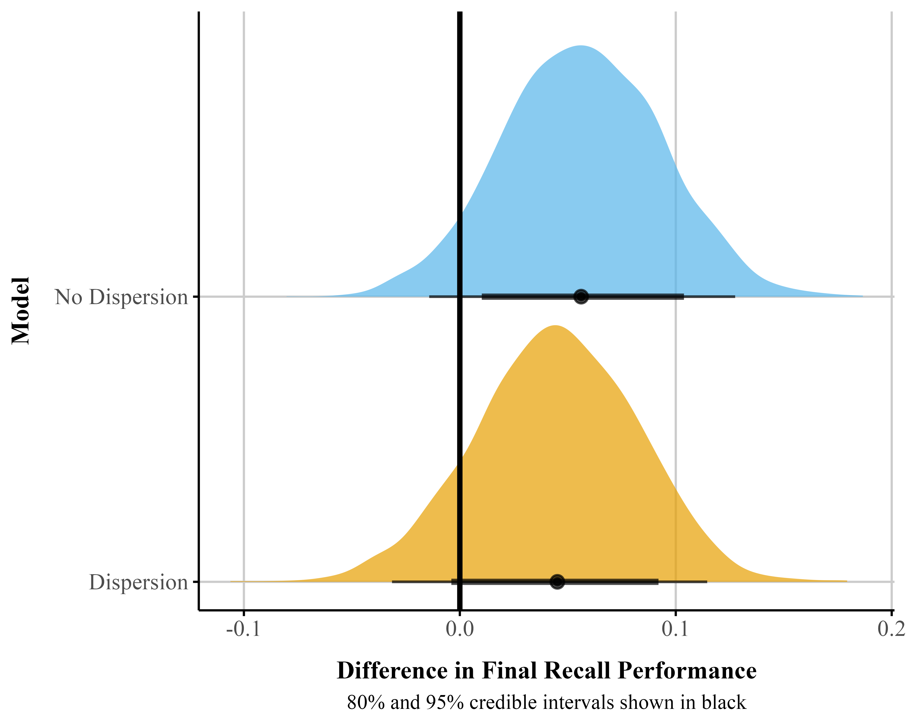
With {marginaleffects}, we can get the actual precision difference between the two groups on \phi using similar code to above by setting dpar to “phi” (Listing 16).
avg_comparisons()
# get risk difference by default
beta_avg_phi <- avg_comparisons(
beta_brms_dis,
variables = "Fluency",
dpar = "phi",
comparison = "difference"
)# Proportions
p1 <- 0.35 # Fluent
p2 <- 0.30 # Disfluent
# Cohen's h formula
cohens_h <- 2 * (asin(sqrt(p1)) - asin(sqrt(p2)))
# CI lower and upper bounds
p1_lower <- 0.328
p1_upper <- 0.419
p2_lower <- 0.250
p2_upper <- 0.329
# Lower bound of h
h_lower <- 2 * (asin(sqrt(p1_lower)) - asin(sqrt(p2_upper)))
# Upper bound of h
h_upper <- 2 * (asin(sqrt(p1_upper)) - asin(sqrt(p2_lower)))In psychology, it is common to report effect size measures like Cohen’s d (Cohen, 1977). When working with proportions we can calculate something similar called Cohen’s h. Taking our proportions, we can use the below equation (Equation 2) to calculate Cohen’s h along with the 95% Cr.I around it. Using this metric we see the effect size is small (0.107), 95% credible interval [-0.002, 0.361].
h = 2 \cdot \left( \arcsin\left(\sqrt{p_1}\right) - \arcsin\left(\sqrt{p_2}\right) \right) \tag{2}
Figure 12 (B) shows the predictive check for our beta model. The model’s predictions generally conform to the data as the predictions are now between constrained to the 0-1 interval. However, the model’s predictive performance can be improved when the bounds of the scale are explicitly specified.
A limitation of beta regression is that it can only accommodate values strictly between 0 and 1, excluding exact zeros and ones—that is, cases where the outcome is observed at the boundary of the scale. The Beta distribution is therefore not directly applicable when such boundary values are present.In our dataset, we observed 9 rows where Accuracy equals zero. To fit a standard beta regression model, we removed these values; however, doing so excludes potentially meaningful information—especially if the endpoints of the scale reflect substantively distinct outcomes. More generally, the appropriate treatment of 0s and 1s depends on how they arise. In some cases, boundary values may be structural, reflecting real and systematic outcomes (e.g., true failure or perfect performance). In other cases, they may arise from measurement constraints or discretization (e.g., proportions based on a small number of trials).
In our case, these 0s may be structural—that is, they represent real instances where participants failed to answer correctly rather than random noise or measurement error. For example, the fluency of the instructor might influence the likelihood of these zero responses. When boundary values are thought to arise from a distinct process, it can be useful to model them separately from the continuous portion of the data.
One approach is to use a zero-inflated beta (ZIB) model. This model estimates the mean (\mu) and precision (\phi) of the beta distribution for values between 0 and 1, while also including an additional parameter, \alpha, that captures the probability of observing structural zeros. The ZIB model thus represents a mixture of data-generating processes: a logistic regression component models whether an observation is exactly 0, and a beta regression component models the continuous values in (0, 1).
Substantively, this approach is appropriate when we believe that zeros arise from a process that is qualitatively distinct from the process generating non-zero values. For example, in a dataset measuring the proportion of looks to specific areas of a visual display, individuals who never fixate on a region may differ meaningfully from those who do, warranting a separate model for these boundary observations.
The zero-inflated beta models a mixture of the data-generating process. The \alpha parameter uses a logistic regression to model whether the data is 0 or not. Substantively, this could be a useful model when we think that 0s come from a process that is relatively distinct from the data that is greater than 0. For example, if we had a dataset with proportion of looks or eye fixations to certain areas on marketing materials, we might want a separate model for those that do not look at certain areas on the screen because individuals who do not look might be substantively different than those that look.
We can fit a ZIB model using brms() and use the {marginaleffects} package to make inferences about our parameters of interest. Before we run a zero-inflated beta model, we will need to transform our data again and remove the one 1 value in our data–we can keep our 0s. Similar to our beta regression model we fit in brms, we will use the bf() function to fit several models. We fit our \mu and \phi parameters as well as our zero-inflated parameter (\alpha; here labeled as zi). In brms we can use the zero_inflated_beta family (see Listing 17).
brm()
# keep 0 but remove 1
data_beta_0 <- fluency_data |>
filter(Accuracy != 1)
# set up model formual for zero-inflated beta in brm
zib_model <- bf(
Accuracy ~ Fluency, # The mean of the 0-1 values, or mu
phi ~ Fluency, # The precision of the 0-1 values, or phi
zi ~ Fluency, # The zero-or-one-inflated part, or alpha
family = zero_inflated_beta()
)
# fit zib model with brm
fit_zi <- brm(
formula = zib_model,
data = data_beta_0,
file = here::here("manuscript", "models", "bayes_zib_model0not1.rds")
)The ZIB model does a bit better at capturing the structure of the data than the beta regression model (see Figure 12). Specifically, the ZIB model more accurately captures the increased density of values near the lower end of the scale (i.e., near zero), which the standard beta model underestimates. The ZIB model’s predictive distributions also align more closely with the observed data across the entire range, particularly in the peak and tail regions. This improved fit likely reflects the ZIB model’s ability to explicitly model excess 0s (or near-zero values) via its inflation component, allowing it to better account for features in the data that a standard beta distribution cannot accommodate.
Table 8, under the zero-inflated beta regression column, provides a summary of the posterior distribution for each parameter. As stated before, it is preferable to back-transform our estimates to get probabilities. To get the predicted probabilities we can again use the avg_predictions() and avg_comparisons() functions from {marginaleffects} package (Arel-Bundock, 2024) to get predicted probabilities and the probability difference between the levels of each factor. We can model the parameters separately using the dpar argument setting to: \mu, \phi, \alpha. Here we look at the risk difference for Fluency under each parameter. If one were interested in the average effect for the entire model, the dpar argument could be removed.
As shown in Table 4, evidence for an effect of Fluency is inconclusive – the 95% Cr.I is wide, suggesting substantial uncertainty about the direction and magnitude of the effect–that is, though most of the posterior density supports positive effects, nil and weakly negative effects cannot be ruled out.
marg_zi_brms <- fit_zi |>
avg_comparisons(
variables = "Fluency",
dpar = "mu",
comparison = "difference"
)Table 4
Probablity fluency difference (\mu)
| Contrast | Mean | 95% Cr.I | pd |
|---|---|---|---|
| Fluent - Disfluent | 0.043 | [-0.03, 0.119] | 0.872 |
marg_phi_brms <- fit_zi |>
avg_comparisons(
variables = "Fluency",
dpar = "phi",
comparison = "difference"
)Table 5
Probablity fluency difference (\phi)
| Contrast | Mean | 95% Cr.I | pd |
|---|---|---|---|
| Fluent - Disfluent | 2.73 | [-0.789, 6.608] | 0.925 |
As shown in Table 5, evidence for an effect of Fluency on dispersion is inconclusive – the 95% Cr.I encompasses negative, nil, and positive values, suggesting uncertainty about the direction of the effect. The pd is 0.92 indicating that 87% of the distribution is positive, but 13% is negative.
marg_zi_brms <- fit_zi |>
avg_comparisons(
variables = list(Fluency = "revpairwise"),
dpar = "zi",
comparison = "difference"
)p_d <- marg_zi_brms |> # get pd for zi paramter
p_direction()Figure 8
Visualization of the predicted difference for zero-inflated part of model
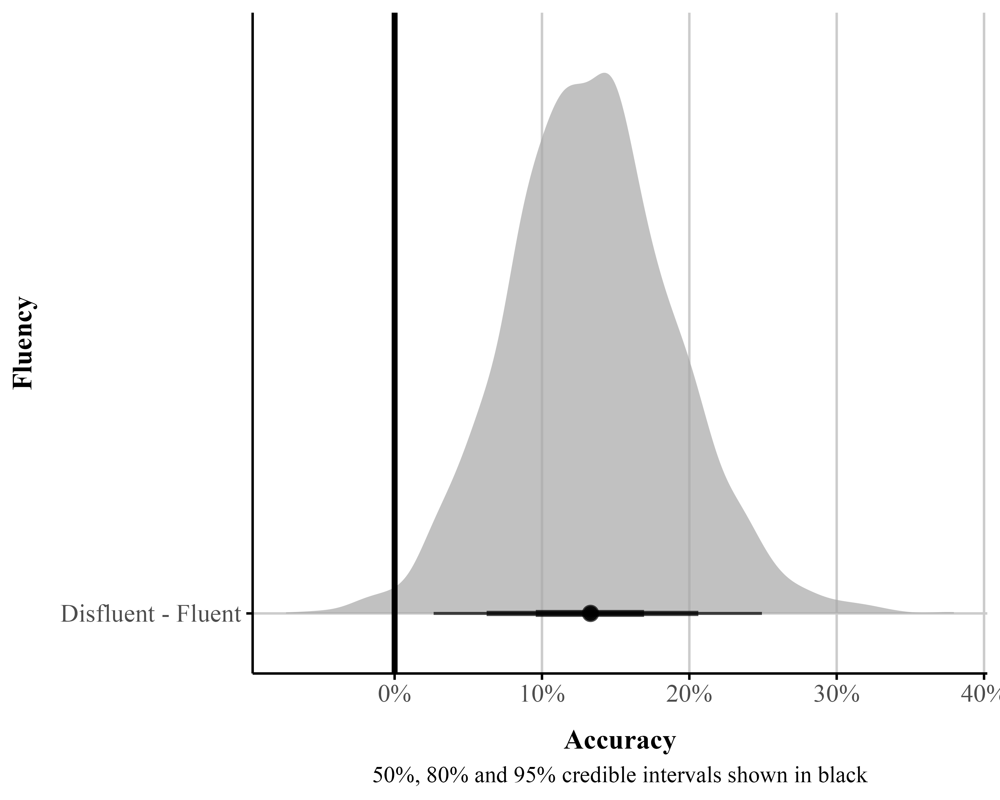
We can use {marginaleffects} to estimate and plot the posterior difference between the fluent and disfluent conditions (see Figure 8). In Figure 8, the posterior distribution for this contrast lies mostly below zero, indicating that a disfluent instructor is associated with a higher probability of zero responses. The estimated reduction is approximately 13%, and the posterior probability of a positive effect is 0.99 suggesting strong evidence that effect is above zero and the disfluent instruction increases the probability of zero responses.
The ZIB model works well if there are 0s in your data, but not 1s.9 In our previous examples we either got rid of both 0s and 1s (beta regression), or removed the 1s (ZIB). Sometimes it is theoretically useful to model both 0s and 1s as separate processes or to consider these values as essentially similar parts of the continuous response, as we show later in the ordered beta regression model. For example, this is important in visual analog scale data where there might be a prevalence of responses at the bounds (Kong & Edwards, 2016), in JOL tasks (Wilford et al., 2020), or in a free-list task where individuals provide open responses to some question or topic which are then recoded to fall between 0-1 (Bendixen & Purzycki, 2023). Here 0s and 1s are meaningful; 0 means item was not listed and 1 means the item was listed first.
Similar to the beta and zero-inflated models discussed above, we can fit a zero-and-one‐inflated beta (ZOIB) model in {brms} using the zero_one_inflated_beta family. This formulation simultaneously estimates the mean \mu and precision \phi of the Beta component, as well as two inflation parameters: \alpha , the probability that an observation is at either boundary (0 or 1), and \gamma , the conditional probability that, given an observation falls on a boundary, it takes the value 1 rather than 0. In other words, \alpha determines how often responses occur exactly at the endpoints, and \gamma determines the balance between zeros and ones among those endpoint values. This specification allows the model to capture both the continuous variation in the interior of the (0, 1) interval and the presence of exact boundary values.
To illustrate how \alpha and \gamma shape the distribution, Figure 9 displays simulated data across a range of parameter combinations. As \alpha increases, more responses occur at the endpoints. As \gamma increases, the proportion of those endpoint responses that are 1 increases relative to 0, producing increasingly pronounced spikes at 1 as \gamma approaches 1. Together, these parameters give the ZOIB model the flexibility to represent datasets with mixtures of continuous values and exact zeros and ones.
# Zero-one inflated beta generator adapted from
# https://vuorre.com/posts/2019-02-18-analyze-analog-scale-ratings-with-zero-one-inflated-beta-models/
rzoib <- function(n = 1000, alpha = 0.1, gamma = 0.45, mu = 0.7, phi = 3) {
a <- mu * phi
b <- (1 - mu) * phi
y <- ifelse(
rbinom(n, 1, alpha),
rbinom(n, 1, gamma),
rbeta(n, a, b)
)
y
}
# Optimized parameter grid
param_grid <- expand_grid(
alpha = c(0.1, 0.4),
gamma = c(0.1, 0.9),
mu = 0.7,
phi = 3
)
# Simulate data
set.seed(123)
sim_data <- param_grid %>%
mutate(
data = pmap(
list(alpha, gamma, mu, phi),
~ rzoib(1000, ..1, ..2, ..3, ..4)
)
) %>%
unnest(data) %>%
rename(Accuracy = data)
# Classify type
plot_data <- sim_data %>%
mutate(
Type = case_when(
Accuracy == 0 ~ "Zero",
Accuracy == 1 ~ "One",
TRUE ~ "beta"
)
)
# Ensure 'Zero' comes before 'One'
plot_data <- plot_data %>%
mutate(Type = factor(Type, levels = c("Zero", "One", "beta")))
ggplot() +
# beta histogram
geom_histogram(
data = plot_data %>% filter(Type == "beta"),
aes(x = Accuracy, y = after_stat(count)),
bins = 50,
fill = "gray60",
color = "white",
alpha = 0.8
) +
# Spikes at 0 and 1
geom_col(
data = plot_data %>%
filter(Type != "beta") %>%
group_by(alpha, gamma, Accuracy, Type) %>%
summarise(count = n(), .groups = "drop"),
aes(x = Accuracy, y = count, fill = Type),
width = 0.01
) +
scale_fill_manual(
values = c("Zero" = "red", "One" = "blue"),
name = "Type"
) +
facet_grid(
gamma ~ alpha,
labeller = label_both,
scales = "free_y",
switch = "y"
) +
labs(
x = "Accuracy",
y = "Count"
) +
theme_publication() +
scale_x_continuous(labels = label_percent())Figure 9
Simulated data from a ZOIB model illustrating the effects of the zero-one inflation parameter (\alpha) and the conditional one-inflation parameter (\gamma).
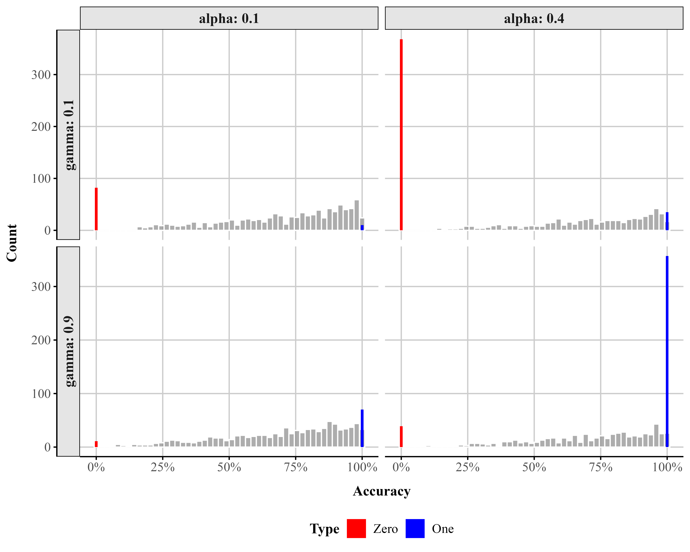
To fit a ZOIB model we use the bf() function. We model each parameter as a function of Fluency, except for coi (the conditional probability of a 1 given a boundary observation), which we model as intercept-only because there is only a single observation at 1 in the data. If more 1s were present, we would model coi as a function of Fluency as well. We then pass zoib_model to the brm() function (see @lst-zoib). The summary of the output is in Table 8 (under ZOIB).
brm().
# fit the zoib model
zoib_model <- bf(
Accuracy ~ Fluency, # The mean of the 0-1 values, or mu
phi ~ Fluency, # The precision of the 0-1 values, or phi
zoi ~ Fluency, # The zero-or-one-inflated part, or alpha
coi ~ 1, # The one-inflated part, conditional on the 1s, or gamma
family = zero_one_inflated_beta()
)
fit_zoib <- brm(
formula = zoib_model,
data = fluency_data,
file = here::here("manuscript", "models", "bayes_zoib_model")
)The output for the model is lengthy because we are estimating four distinct components, each with their own independent responses and sub-models. All the coefficients are on the logit scale, except \phi , which is on the log scale. Thankfully drawing inferences for all these different parameters, plotting their distributions, and estimating their average marginal effects looks exactly the same–all the brms and {marginaleffects} functions we used work the same.
With {marginaleffects} we can choose marginalize over all the sub-models, averaged across the 0s, continuous responses, and 1s in the data, or we can model the parameters separately using the dpar argument like we did above setting it to: \mu, \phi, \alpha, \gamma (see below). Using avg_predictions() and not setting dpar we can get the predicted probabilities across all the sub-models. We can also plot the overall difference between fluency and disfluency for the whole model with plot_predictions().
In addition, we show below how one can extract the predicted probabilities and marginal effects for \gamma (and a similar process for any other model component, zoi, etc.):
# get average predictions for coi param
coi_probs <- avg_predictions(fit_zoib, variables = "Fluency", dpar = "coi")
# get differene between the two conditions
coi_me <- avg_comparisons(fit_zoib, variables = c("Fluency"), dpar = "coi")Looking at the output from the ZOIB model (Table 8), we can see how running a model like this can become fairly complex as it is fitting distinct sub-models for each component of the scale. The ability to consider 0s and 1s as distinct processes from continuous values comes at a price in terms of complexity and interpretability. A simplified version of the zero-one-inflated beta (ZOIB) model, known as ordered beta regression (Kubinec, 2022; see also Makowski et al., 2025 for a reparameterized version called the beta-Gate model), has been recently proposed. The ordered beta regression model exploits the fact that, for most analyses, the continuous values (between 0-1) and the discrete outcomes (e.g., 0 or 1) are ordered. For example, as a covariate x increases or decreases, we should expect the bounded outcome y to increase or decrease monotonically as well from 0 to (0,1) to 1. The ZOIB model does not impose this restriction; a covariate could increase and the response y could increase in its continuous values while simultaneously decreasing at both end points.10 This complexity is not immediately obvious when fitting the ZOIB, nor is it a potential relationship that many scholars want to consider when examining how covariates influence a bounded scale.
To make the response ordered, the ordered beta regression model estimates a weighted combination of a standard beta regression model for continuous responses and a logit model for the discrete values of the response. By doing so, the amount of distinctiveness between the continuous responses and the discrete end points is a function of the data (and any informative priors) rather than strictly defined as fully distinct processes as in the ZOIB. For some datasets, the continuous and discrete responses will be fairly distinct, and in others less so.
The weights that average together the two parts of the outcome (i.e., discrete and continuous) are determined by cutpoints that are estimated in conjunction with the data in a similar manner to what is known as an ordered logit model. An in-depth explanation of ordinal regression is beyond the scope of this tutorial (Bürkner & Vuorre, 2019; but see Fullerton & Anderson, 2021). At a basic level, ordinal regression models are useful for outcome variables that are categorical in nature and have some inherent ordering (e.g., Likert scale items). To preserve this ordering, ordinal models rely on the cumulative probability distribution. Within an ordinal regression model it is assumed that there is a continuous but unobserved latent variable that determines which of k ordinal responses will be selected. For example on a typical Likert scale from ‘Strongly Disagree’ to ‘Strongly Agree’, you could assume that there is a continuous, unobserved variable called ‘Agreement’.
While we cannot measure Agreement directly, the ordinal response gives us some indication about where participants are on the continuous Agreement scale. k - 1 cutoffs are then estimated to indicate the point on the continuous Agreement scale at which your Agreement level is high enough to push you into the next ordinal category (say Agree to Strongly Agree). Coefficients in the model estimate how much different predictors change the estimated continuous scale (here, Agreement). Since there’s only one underlying process, there’s only one set of coefficients to work with (proportional odds assumption).
In an ordered beta regression, three ordered categories are modeled: (1) exactly zero, (2) somewhere between zero and one, and (3) exactly one. In an ordered beta regression, (1) and (2) are modeled with cumulative logits, where one cutpoint is the the boundary between Exactly 0 and Between 0 and 1 and the other cutpoint is the boundary between Between 0 and 1 and Exactly 1. The continuous values in the middle, 0 to 1 (3), are modeled as a vanilla beta regression with parameters reflecting the mean response on the logit scale as we have described previously. Ultimately, employing cutpoints allows for a smooth transition between the bounds and the continuous values, permitting both to be considered together rather than modeled separately as the ZOIB requires.
The ordered beta regression model has shown to be more efficient and less biased than some of the methods discussed (Kubinec, 2022) herein and has seen increasing use across the biomedical and social sciences (Martin et al., 2024; Nouvian et al., 2023; Shrestha et al., 2024; Smith et al., 2024; Wilkes et al., 2024) because it produces only a single set of coefficient estimates in a similar manner to a standard beta regression or OLS.11
To fit an ordered beta regression in a Bayesian context we use the {ordbetareg} (Kubinec, 2023) package. {ordbetareg} is a front-end to the brms package that we described earlier; in addition to the functions available in the package, most brms functions and plots, including the diverse array of regression modeling options, will work with {ordbetareg} models. (We note that the ordbeta model is also available as a maximum-likelihood variant in the R package {glmmTMB}.) We first load the {ordbetareg} package (see Listing 20).
library(ordbetareg)The {ordbetareg} package uses brms on the front-end so all the arguments we used previously apply here. Instead of the brm() function we use ordbetareg(). To fit a model where dispersion does not vary as a function of fluency we can use the below code (see Listing 21).
ordbetareg()
ord_fit_brms <- ordbetareg(
Accuracy ~ Fluency,
data = fluency_data,
file = here::here("manuscript", "models", "bayes_ordbeta_model")
)However, if we want dispersion to vary as a function of fluency we can easily do that (see Listing 22). Note the addition of the phi_reg argument in m.phi. This argument allows us to include a model that explicitly models the dispersion parameter. Because we are modeling \phi as a function of fluency, we set the the argument to both.
ordbetareg()
ord_beta_phi <- bf(Accuracy ~ Fluency, phi ~ Fluency)
m.phi <- ordbetareg(
ord_beta_phi,
data = fluency_data,
phi_reg = "both",
file = here::here("manuscript", "models", "bayes_ordbeta_phi_model")
)Table 8 presents the posterior summary. We can use {marginaleffects} to calculate differences on the response scale that average over (or marginalize over) all our parameters.
ord_beta_avg <- m.phi |>
avg_comparisons(
variables = "Fluency",
comparison = "difference"
)p_d <- ord_beta_avg |>
p_direction() |>
as.data.frame() |>
select(pd)
ord_beta_avg |>
select(term, contrast, estimate, conf.low, conf.high) |>
mutate(
mutate(mutate(across(where(is.numeric), ~ round(.x, 3)))),
`95% Cr.I` = str_glue("[{conf.low}, {conf.high}]")
) |>
rename("Contrast" = "contrast", "Mean" = "estimate", "Term" = "term") |>
bind_cols(p_d) |>
select(Contrast, Mean, `95% Cr.I`, pd) |>
tt() |>
format_tt(digits = 3) |>
format_tt(escape = TRUE)Table 6
Marginal effect of fluency for ordered beta model
| Contrast | Mean | 95% Cr.I | pd |
|---|---|---|---|
| Fluent - Disfluent | 0.061 | [-0.02, 0.139] | 0.937 |
In Table 6 the credible interval for the fluency difference is mostly positive with 0.937 % of the posterior above zero, suggesting that fluent instructions probably yield somewhat higher accuracy than disfluent instructions after accounting for boundary responses, though the effect remains uncertain. In addition, the 95% Cr.I is wide suggesting uncertainty about the effect.
The model cutpoints are not reported by default in the summary output, but we can access them with the R package posterior (Bürkner et al., 2025) and the functions as_draws and summary_draws.
Table 7
Cutzero and cutone parameter summary
| Parameter | Mean | 95% Cr.I |
|---|---|---|
| cutzero | -2.97 | [-3.58, -2.4] |
| cutone | 1.85 | [1.64, 2.07] |
In Table 7, cutzero is the first cutpoint (the difference between 0 and continuous values) and cutone is the second cutpoint (the difference between the continuous values and 1). These cutpoints are on the logit scale and as such the numbers do not have a simple substantive meaning. In general, as the cutpoints increase in absolute value (away from zero), then the discrete/boundary observations are more distinct from the continuous values. This will happen if there is a clear gap or bunching in the outcome around the bounds. This type of empirical feature of the distribution may be useful to scholars if they want to study differences in how people perceive the ends of the scale versus the middle. It is possible, though beyond the scope of this article, to model the location of the cutpoints with hierarchical (non-linear) covariates in brms. In the most recent version of ordbeta, it is possible to test the influence of different factors on these boundaries.
The best way to visualize model fit is to compare the model’s predictions to the original outcome. Because ordered beta regression is a mixed discrete/continuous model, the discrete (exactly 0 or 1) and continuous parts of the outcome should be checked separately. The default plot in brms will collapse these two features of the outcome together, which will make the fit look worse than it actually is.
For the discrete part, a common choice is a bar chart comparing the observed number of 0s, 1s, and continuous responses with the numbers predicted by the model. However, such bar charts are weak diagnostics: a model that predicts the right overall proportion of 0s can still assign those 0s to the wrong observations, and the bar chart cannot reveal this (Säilynoja et al., 2026). A better option is a calibration plot (Säilynoja et al., 2026). For each boundary (exactly 0 and exactly 1) we treat the outcome as binary (e.g., 1 if a response is exactly 0, and 0 otherwise) and plot the observed rate of that outcome against the model’s predicted probability. The curve is estimated with the pool-adjacent-violators (PAV) algorithm, which yields a monotone, step-shaped calibration curve without requiring the user to choose bins. If the model is well calibrated, the curve should fall along the diagonal: observations given, for example, a 10% predicted probability of being 0 should be 0 about 10% of the time. In {bayesplot} (version 1.16.0 or later), ppc_calibration() produces this plot from the posterior draws of the predicted probabilities. For the ordered beta model, the probability of a response of exactly 0 is 1 - \text{logit}^{-1}(\eta - k_1) and the probability of exactly 1 is \text{logit}^{-1}(\eta - k_2), where \eta is the linear predictor for \mu and k_1 and k_2 are the two cutpoints (in {ordbetareg}, k_1 = cutzero and k_2 = cutzero + \exp(cutone)). We compute these probabilities for every posterior draw and wrap the plotting in a small helper so that we can reuse it later (see Listing 23).
ppc_calibration_ordbeta <- function(model, outcome) {
y <- model$data[[outcome]] # outcome as used by the model (0-1 scale)
# linear predictor for mu (logit scale): draws x observations
eta <- posterior_linpred(model, dpar = "mu")
cuts <- as_draws_matrix(model, variable = c("cutzero", "cutone"))
cut1 <- as.vector(cuts[, "cutzero"])
cut2 <- cut1 + exp(as.vector(cuts[, "cutone"]))
# predicted probability of exactly 0 and exactly 1 for every draw
p_zero <- 1 - plogis(eta - cut1)
p_one <- plogis(eta - cut2)
# fewer quantile dots so each dot is large enough to see
calib <- function(event, prep, title) {
ppc_calibration(y = event, prep = prep, qdots_quantiles = 30) +
ggtitle(title)
}
list(
zero = calib(as.integer(y == 0), p_zero, "Exactly 0"),
one = calib(as.integer(y == 1), p_one, "Exactly 1")
)
}For the continuous part, pp_check_ordbeta() from {ordbetareg} overlays the density of the observed continuous responses with densities from posterior predictive draws (see Figure 10 C).
calib <- ppc_calibration_ordbeta(m.phi, "Accuracy")
plots <- pp_check_ordbeta(
m.phi,
ndraws = 100,
outcome_label = "Final Test Accuracy"
)
plot_grid(
calib$zero,
calib$one,
plots$continuous,
labels = c("A", "B", "C"),
nrow = 1
)Figure 10
Posterior predictive checks for the ordered beta regression model. A. PAV-adjusted calibration plot for responses of exactly 0. B. PAV-adjusted calibration plot for responses of exactly 1. C. Density overlay for the continuous responses. In A and B the dark line is the PAV calibration curve with its 95% pointwise credible interval, the dashed diagonal shows perfect calibration, and the dots show the distribution of predicted probabilities.
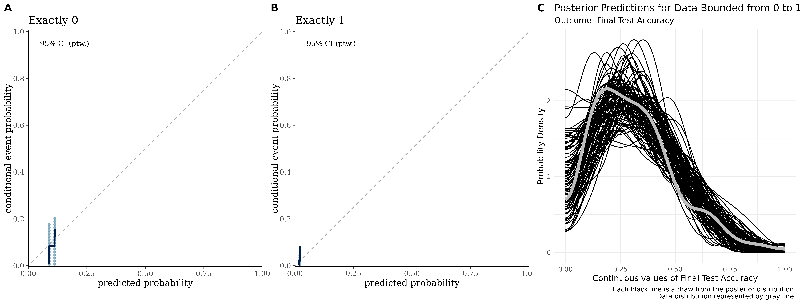
Because fluency is the only predictor, the model makes just two distinct predictions for each boundary (one per condition), so the calibration curves have only two steps and occupy a small region near the lower left of each panel. For exactly 0 (Figure 10 A), the calibration curve stays close to the diagonal, indicating that the model’s predicted probability of a 0 in each condition matches how often 0s are actually observed. There is only a single response of exactly 1 in these data, so the calibration plot in Figure 10 B shows no evidence of miscalibration, but it cannot tell us much either. With more predictors (e.g., continuous covariates or participant-level effects), the predicted probabilities would spread out and these plots would become more informative. For the continuous plot shown as a density plot with one line per posterior draw (Figure 10 C), the model does a very good job at capturing the distribution.
To fully understand model fit, the discrete and continuous checks need to be inspected together as they are conceptually distinct. Overall, these checks indicate that the ordered beta model fits the data well.
{ordbetareg} provides a useful visualization function called plot_hk() (Ye & Heiss, 2023) that can represent dispersion in the entire outcome as a function of discrete covariates. This function produces a plot of predicted proportions across the range of our Fluency factor. In Figure 11 we get predicted proportions for Fluency across the bounded scale. Looking at the figure we can see there is much overlap between instructors in the middle portion (\mu) . However, we do see some small differences at the zero bounds.
plot_hk(
ord_fit_brms,
grouping_fac = "Fluency",
recode_group_labels = c("Disfluency", "Fluency")
)Figure 11
Heiss-Kurz plot of predicted probabilities across the scale (0-100)
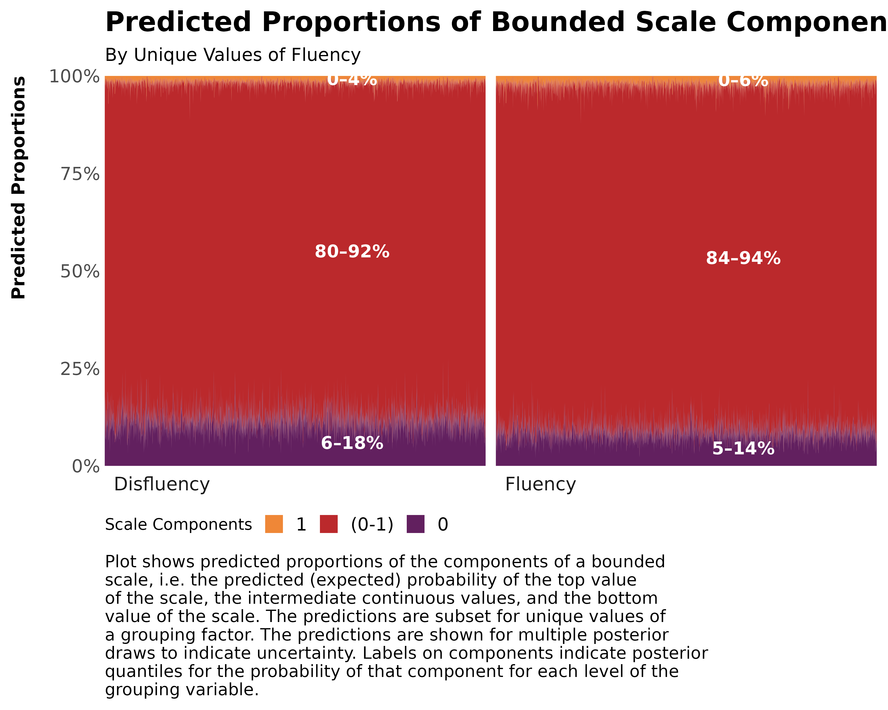
In the {ordbetareg} function there is a true_bound argument. In cases where your data is not bounded between 0-1, this argument can be used to specify the bounds of the argument to fit the ordered beta regression. For example, the response data might be bounded between 1 and 7. If so, {ordbetareg} can model it within the [0,1] interval and {ordbetareg} will convert the model predictions back to the true bounds after estimation.
# fit models from ran models so tables and figures are in correct place.
model1 <- read_rds(here("manuscript", "models", "model_reg_bayes.rds"))
model2 <- read_rds(here(
"manuscript",
"models",
"model_beta_bayes_dis_run01.rds"
))
model3 <- read_rds(here("manuscript", "models", "bayes_zib_model0not1.rds"))
model4 <- read_rds(here("manuscript", "models", "bayes_zoib_model.rds"))
model5 <- read_rds(here("manuscript", "models", "bayes_ordbeta_phi_model.rds"))# Define your models
model_list <- list(
"Bayesian LM" = model1,
"Beta Regression" = model2,
"ZIB" = model3,
"ZOIB" = model4,
"Ordered Beta" = model5
)
# Process each model
cleaned_tables <- imap(model_list, function(mod, name) {
model_parameters(mod, centrality = "mean") |>
mutate(
Mean = sprintf("%.3f", Mean),
Cr.I = str_glue("[{round(CI_low, 3)}, {round(CI_high, 3)}]"),
pd_star = case_when(
pd >= 0.995 ~ str_glue("{sprintf('%.3f', pd)}***"),
pd >= 0.985 ~ str_glue("{sprintf('%.3f', pd)}**"),
pd >= 0.975 ~ str_glue("{sprintf('%.3f', pd)}*"),
TRUE ~ sprintf("%.3f", pd)
)
) |>
pivot_longer(
cols = c(Mean, Cr.I, pd_star),
names_to = "Stat",
values_to = "value"
) |>
mutate(
Stat = recode(Stat, pd_star = "pd"),
Model = name
) |>
select(Parameter, Stat, Model, value)
})
# Combine all tables
pretty_table <- bind_rows(cleaned_tables) |>
pivot_wider(names_from = Model, values_from = value) |>
mutate(across(where(is.character), ~ replace_na(.x, "-"))) |>
# Simplify parameter names
mutate(Parameter = str_replace_all(Parameter, "FluencyFluent", "Fluency")) |>
# Set factor levels
mutate(
Stat = factor(Stat, levels = c("Mean", "Cr.I", "pd")),
Parameter = factor(
Parameter,
levels = c(
"b_Intercept",
"b_Fluency",
"sigma",
"b_phi_Intercept",
"b_phi_Fluency",
"b_zi_Intercept",
"b_zi_Fluency",
"b_zoi_Intercept",
"b_zoi_Fluency",
"b_coi_Intercept",
"b_coi_Fluency"
)
)
) |>
arrange(Parameter, Stat) |>
group_by(Parameter) |>
mutate(Parameter = if_else(row_number() == 1, as.character(Parameter), "")) |>
ungroup()
# Display as styled table
pretty_table |>
tt(width = 0.95) |>
format_tt(escape = TRUE) |>
style_tt(fontsize = .9, align = "c") |>
style_tt(
i = c(
2:3,
5:6,
8:9,
11:12,
14:15,
17:18,
20:21,
23:24,
26:27,
29:30,
32:33
),
italic = TRUE,
fontsize = .6
) |>
theme_rotate()Table 8
Bayesian regression summaries for each model
Parameter |
Stat |
Bayesian LM |
Beta Regression |
ZIB |
ZOIB |
Ordered Beta |
|---|---|---|---|---|---|---|
b_Intercept |
Mean |
0.257 |
-0.829 |
-0.826 |
-0.828 |
-0.865 |
Cr.I |
[0.2, 0.314] |
[-1.095, -0.561] |
[-1.092, -0.549] |
[-1.09, -0.553] |
[-1.123, -0.59] |
|
pd |
1.000*** |
1.000*** |
1.000*** |
1.000*** |
1.000*** |
|
b_Fluency |
Mean |
0.084 |
0.204 |
0.199 |
0.203 |
0.262 |
Cr.I |
[0, 0.169] |
[-0.14, 0.528] |
[-0.134, 0.552] |
[-0.155, 0.556] |
[-0.083, 0.6] |
|
pd |
0.975* |
0.879 |
0.872 |
0.865 |
0.937 |
|
sigma |
Mean |
0.209 |
- |
- |
- |
- |
Cr.I |
[0.179, 0.243] |
- |
- |
- |
- |
|
pd |
1.000*** |
- |
- |
- |
- |
|
b_phi_Intercept |
Mean |
- |
1.601 |
1.595 |
1.596 |
1.614 |
Cr.I |
- |
[1.187, 2.002] |
[1.18, 1.98] |
[1.169, 1.976] |
[1.19, 1.988] |
|
pd |
- |
1.000*** |
1.000*** |
1.000*** |
1.000*** |
|
b_phi_Fluency |
Mean |
- |
0.426 |
0.434 |
0.433 |
0.399 |
Cr.I |
- |
[-0.169, 1] |
[-0.138, 0.994] |
[-0.138, 1.026] |
[-0.204, 0.997] |
|
pd |
- |
0.922 |
0.925 |
0.935 |
0.905 |
|
b_zi_Intercept |
Mean |
- |
- |
-1.661 |
- |
- |
Cr.I |
- |
- |
[-2.45, -0.979] |
- |
- |
|
pd |
- |
- |
1.000*** |
- |
- |
|
b_zi_Fluency |
Mean |
- |
- |
-2.117 |
- |
- |
Cr.I |
- |
- |
[-4.601, -0.335] |
- |
- |
|
pd |
- |
- |
0.991** |
- |
- |
|
b_zoi_Intercept |
Mean |
- |
- |
- |
-1.551 |
- |
Cr.I |
- |
- |
- |
[-2.32, -0.884] |
- |
|
pd |
- |
- |
- |
1.000*** |
- |
|
b_zoi_Fluency |
Mean |
- |
- |
- |
-2.233 |
- |
Cr.I |
- |
- |
- |
[-4.721, -0.473] |
- |
|
pd |
- |
- |
- |
0.995*** |
- |
|
b_coi_Intercept |
Mean |
- |
- |
- |
-1.831 |
- |
Cr.I |
- |
- |
- |
[-3.717, -0.373] |
- |
|
pd |
- |
- |
- |
0.995*** |
- |
*; pd ≥ 0.990 (p ≤ .01) = **; pd ≥ 0.998 (p ≤ .001) = ***.
model_levels <- c("LM", "Beta", "ZIB", "ZOIB")
x_grid <- seq(0, 1, length.out = 300)
dens_summ <- pred %>%
mutate(Model = factor(Model, levels = model_levels)) %>%
split(.$iter_group) %>% # split by posterior draw
map_df(
function(df_draw) {
dens_list <- df_draw %>%
group_by(Model, Fluency) %>%
group_split()
map_df(dens_list, function(df_sub) {
d <- density(df_sub$iter_value, from = 0, to = 1, n = length(x_grid))
tibble(
Model = df_sub$Model[1],
Fluency = df_sub$Fluency[1],
x = d$x,
y = d$y
)
})
},
.id = "iter_group"
) %>%
group_by(Model, Fluency, x) %>%
summarise(
y_med = median(y),
y_lo = quantile(y, 0.025),
y_hi = quantile(y, 0.975),
.groups = "drop"
)
p <- ggplot() +
# Observed histogram
geom_histogram(
data = fluency_data,
aes(
x = Accuracy,
y = after_stat(density),
fill = Fluency
),
bins = 25,
alpha = 0.30,
position = "identity"
) +
# Posterior predictive ribbon
geom_ribbon(
data = dens_summ,
aes(x = x, ymin = y_lo, ymax = y_hi, fill = Fluency),
alpha = 0.18
) +
# Median prediction
geom_line(
data = dens_summ,
aes(x = x, y = y_med, color = Fluency),
linewidth = 1
) +
facet_wrap(~Model) +
coord_cartesian(xlim = c(0, 1)) +
scale_fill_manual(
values = c(
"Disfluent" = "#E69F00",
"Fluent" = "#56B4E9"
)
) +
scale_color_manual(
values = c(
"Disfluent" = "#E69F00",
"Fluent" = "#56B4E9"
)
) +
labs(x = "Accuracy", y = "Density") +
scale_x_continuous(labels = label_percent()) +
theme_publication()
pFigure 12
Posterior predictive checks of accuracy distributions by fluency for each model (LM, Beta, ZIB, ZOIB). Observed data are shown as histograms, with median predicted densities (solid lines) and 95% credible intervals (shaded ribbons) overlaid.
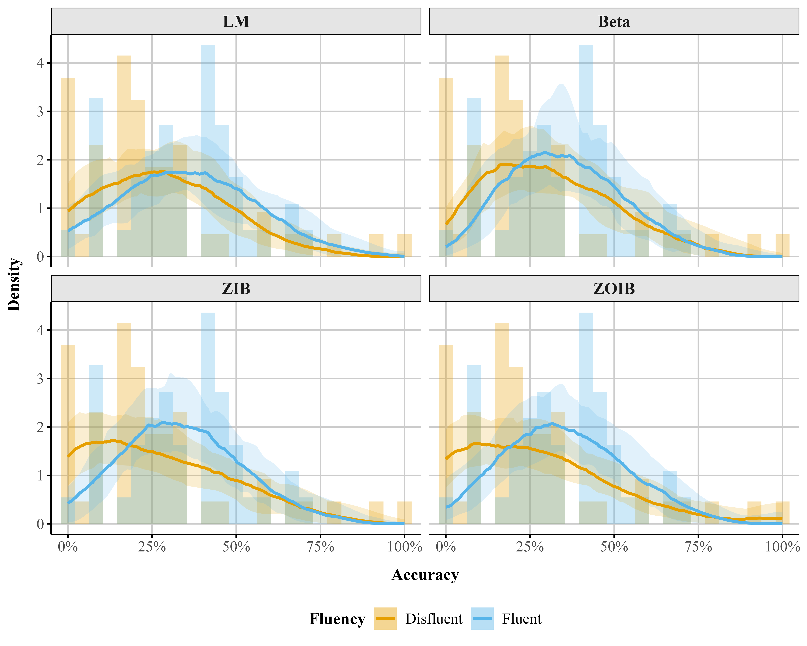
In Case Study 1, our accuracy measure included both zeros and ones; however, there was only a single value of one in the dataset. To more clearly demonstrate how boundary values can be handled, we instead use example data containing multiple zeros and ones. In the same paper, Wilford et al. (2020) also asked participants to provide metamemory judgments for each video using judgments of learning (JOLs). Metamemory judgments refer to predictions about future memory performance; that is, how likely a person believes they are to remember a stimulus on a later memory test. In JOL tasks, participants rate each item on a scale from 0 to 100, where 0 indicates that the item will not be remembered and 100 indicates that it will definitely be remembered. JOLs are widely used in the learning and memory literature (Carpenter et al., 2013; Carpenter & Olson, 2012; Rhodes & Castel, 2008, 2009; Sungkhasettee et al., 2011).
In the current example, we use data from Experiment 1b, in which participants viewed fluent and disfluent lectures online. After watching the videos, participants provided two judgments of learning (JOLs), one after each video. As shown in Figure 13, these judgments included both zeros and ones in both conditions. Wilford et al. (2020) were interested in whether disfluent videos received lower JOLs than fluent videos and analyzed the data using a traditional Gaussian model. However, as shown in Figure 14, this model does not fit the data well.
Table 9 provides a glimpse into the dataset we are using in this example. The dataset contains three columns: Participant (id), Fluency (fluent vs. disfluent), and JOL (the proportion of information participants believed they would recall).
Given the models fit previously, either a ZOIB model or an ordered beta model could be applied here. Because the authors were primarily interested in the overall effect of fluency on JOLs, we fit an ordered beta model to these data.
jol_data <- read_csv(here::here("manuscript", "data", "jol_data.csv"))Table 9
Four observations from Wilford et al. (2020) (Experiment 1b). JOL refers to how likley participant will be to recall information from videos.
| Participant | Fluency | JOL |
|---|---|---|
| 21 | Disfluent | 0.52 |
| 136 | Fluent | 0.60 |
| 92 | Fluent | 0.61 |
| 52 | Disfluent | 0.50 |
jol_data |>
ggplot(aes(x = JOL, y = Fluency, fill = Fluency)) +
stat_dotsinterval(
point_interval = mean_qi,
show_interval = FALSE
) +
stat_summary(
fun = mean,
geom = "point",
shape = 18, # filled diamond
size = 5,
color = "black",
aes(fill = Fluency)
) +
scale_x_continuous(labels = label_percent()) +
scale_y_discrete(NULL, expand = expansion(mult = 0.1)) +
scale_fill_okabe_ito(breaks = NULL) +
theme_publication()Figure 13
Dot plot depicting JOL distributions for the Fluent and Disfluent conditions. Each condition shows individual data points and mean (diamond))
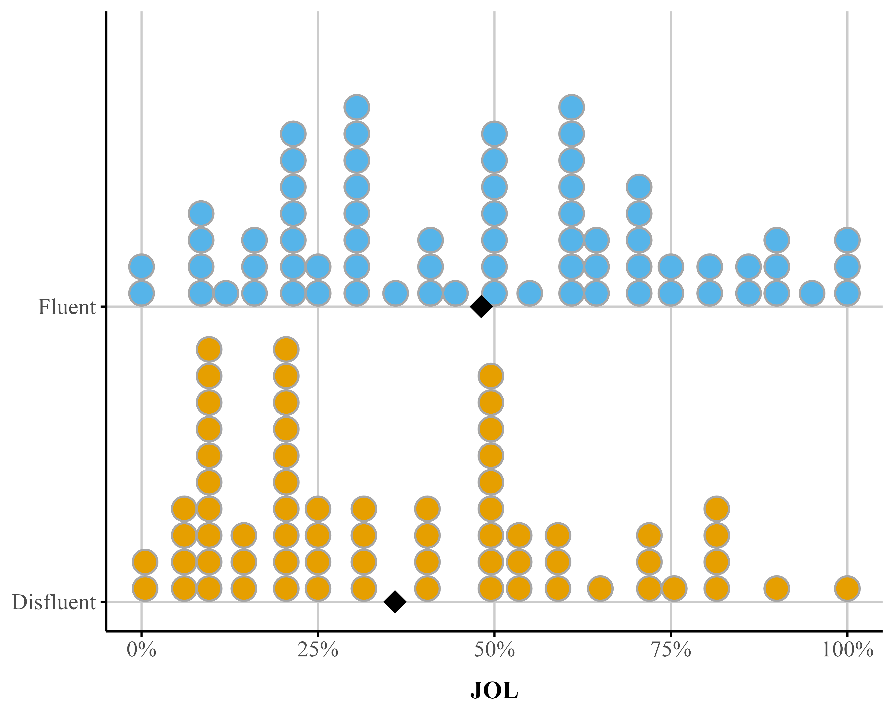
pp_check_jol <- pp_check(
bayes_reg_jol,
type = "dens_overlay_grouped",
group = "Fluency",
ndraws = 100
) +
theme_publication()
pp_check_jolFigure 14
pp check for Guassian JOL model. The plots show 100 posterior predicted distributions with the label yrep (light blue), the distribution of accuracy as function of fluency in dark blue for regular regression.
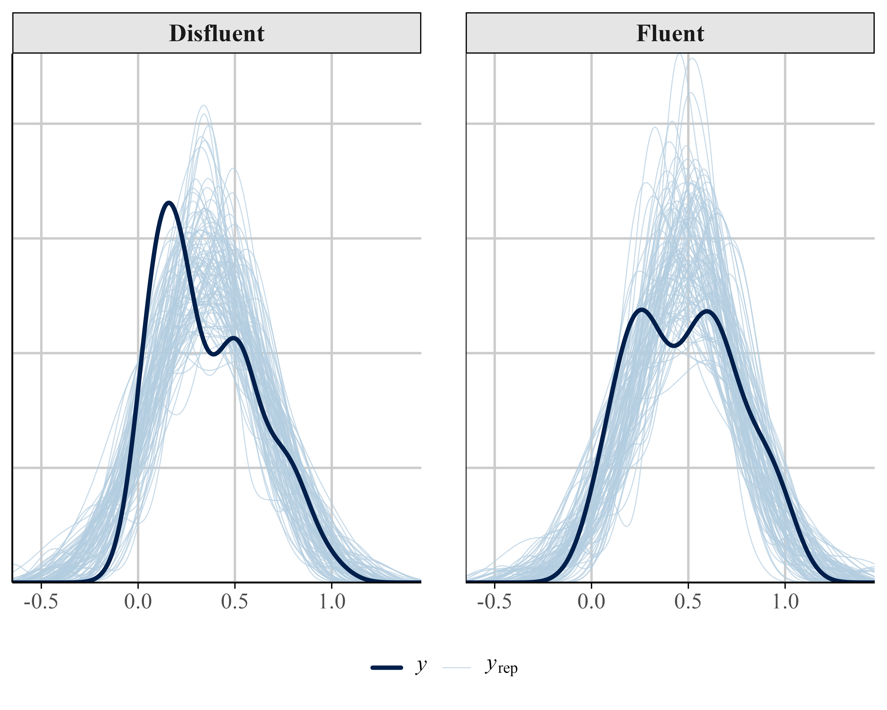
Listing 25 shows the code for fitting an ordered beta regression model for JOLs as a fluency on \mu and \phi. Using {marginaleffects} Listing 26 we see the difference between the conditions is 12% and the probability of direction is high (pd = 1), suggesting the difference is above zero (Table 10.
ordbetareg() for JOLs
ord_beta_phi_jol <- bf(JOL ~ Fluency, phi ~ Fluency)
m.phi_jol <- ordbetareg(
ord_beta_phi_jol,
data = jol_data,
phi_reg = "both",
file = here::here("manuscript", "models", "bayes_ordbeta_phi_jol_model")
)ord_beta_avg_jol <- avg_comparisons(
m.phi_jol,
variables = "Fluency",
comparison = "difference"
)p_d <- ord_beta_avg_jol |>
p_direction() |>
as.data.frame() |>
select(pd)
ord_beta_avg_jol |>
select(term, contrast, estimate, conf.low, conf.high) |>
mutate(
mutate(mutate(across(where(is.numeric), ~ round(.x, 3)))),
`95% Cr.I` = str_glue("[{conf.low}, {conf.high}]")
) |>
rename("Contrast" = "contrast", "Mean" = "estimate", "Term" = "term") |>
bind_cols(p_d) |>
select(Contrast, Mean, `95% Cr.I`, pd) |>
tt() |>
format_tt(digits = 3) |>
format_tt(escape = TRUE)Table 10
Marginal effect of fluency as a fucntion of JOLs for ordered beta model
| Contrast | Mean | 95% Cr.I | pd |
|---|---|---|---|
| Fluent - Disfluent | 0.12 | [0.04, 0.201] | 0.998 |
Figure 15 shows our posterior predictive checks, using the calibration helper from Listing 23 for the boundaries. The calibration curves for responses of exactly 0 and exactly 1 stay close to the diagonal, although with only a handful of boundary responses (3 zeros and 4 ones) they are uncertain. The density overlay shows that the continuous responses are also well described. Overall, the ordered beta model does a good job at describing our data.
calib_jol <- ppc_calibration_ordbeta(m.phi_jol, "JOL")
plots <- pp_check_ordbeta(
m.phi_jol,
ndraws = 100,
outcome_label = "JOLs"
)
plot_grid(
calib_jol$zero,
calib_jol$one,
plots$continuous,
labels = c("A", "B", "C"),
nrow = 1
)Figure 15
Posterior predictive checks for the JOL ordered beta model. A. PAV-adjusted calibration plot for JOLs of exactly 0. B. PAV-adjusted calibration plot for JOLs of exactly 1. C. Density overlay for the continuous JOLs.
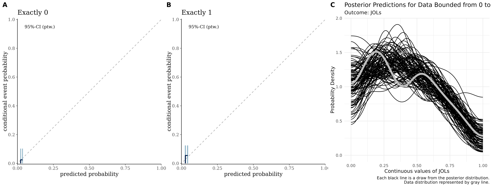
The use of beta regression in psychology, and the social sciences in general, is rare. With this tutorial, we hope to turn the tides. Beta regression models are an attractive alternative to models that impose unrealistic assumptions like normality, linearity, homoscedasticity, and unbounded data. Beyond these models, there are a diverse array of different models that can be used depending on your outcome of interest.
Throughout this tutorial our main aim was to help guide researchers in running analyses with proportional or percentage outcomes using beta regression and some of its alternatives in a Bayesian framework using the {brms} package. In the current tutorial, we used real data from Wilford et al. (2020) (Experiments 1a and 1b) and discussed how to fit these models in R, interpret model parameters, extract predicted probabilities and marginal effects, and visualize the results using the {marginaleffects} package. Specifically, we used data that is commonly used in psychology–accuracy and JOLs.
Comparing our analyses with those of Wilford et al. (2020), we show that traditional approaches (e.g., t-tests) can sometimes converge with more flexible modeling frameworks. For example, in Case Study 2, both we revealed an effect of fluency on metamemory judgments, with fluent instructors receiving higher JOLs than disfluent instructors. However, in other cases, traditional methods can lead to misleading or incomplete inferences. In Case Study 1, using a Gausisan model, we found strong support for the effect being non-zero. However, we noted issues with Gaussian analysis. Applying beta regression and its extensions revealed important nuances that were not captured by simpler methods.
To address this, we applied models that explicitly account for boundary responses and heterogeneity. Using a ZIB model, we found that the effect of fluency on the mean (\mu) component was inconclusive. Importantly, however, the zero-inflated specification revealed an additional pattern: fluency influenced responses at the boundary. Specifically, fluency affected the likelihood that participants failed to recall anything from the videos. Thus, while fluency may not have reliably influenced the amount recalled among participants who recalled at least some information, it did appear to affect whether participants recalled anything at all. We further fit an ordered beta regression model (Kubinec, 2022), which accommodates the full range of values, including 0s and 1s. Consistent with the ZIB results, we did not observe a reliable effect of fluency on the mean once dispersion was taken into account.
These analyses emphasize the importance of fitting a model that aligns with the nature of the data. The simplest and recommended approach when dealing with data that contains 0s and/or 1s is to fit an ordered beta model, assuming the process is truly continuous12. However, if you believe the process is distinct in nature, a ZIB or ZOIB model might be a better choice. Ultimately, this decision should be guided by theory.
For instance, if we believe fluency influences the boundaries (0 and 1), we might want to model this process separately using a ZIB or ZOIB. With the current dataset, fluency might affect specific aspects of performance (such as the likelihood of complete failure) rather than general performance levels. This effect could be due to participant disengagement during the disfluent lecture. If students fail to pay attention because of features of disfluency, they may miss relevant information, leading to a floor effect at the test. Following from this, disfluency would be expected to influence the boundary (0) and not the continuous part of the model. If this is the case, we would want to model this appropriately. However, if we believe fluency effects general performance levels (the continuous part), a model that takes in to account the entire process accounting for the 0s and 1s might be appropriate.
In the discussion section of Wilford et al. (2020), they were unable to offer a tenable explanation for performance differences based on instructor fluency. A model that accounts for the excess 0s in the dataset provides one testable explanation: watching a disfluent lecture may lead to lapses in attention, resulting in poorer performance in that group. These lapses, in turn, contribute to the observed differences in the fluent condition. This modeling approach opens a promising avenue for future research–one that would have remained inaccessible otherwise.
In addition, fitting Bayesian models allowed us to move beyond the dichotomous thinking often associated with frequentist inference—that is, whether an effect is simply present or absent. By incorporating indices such as Cr.Is, pd, ROPE, and, when appropriate, Bayes factors, we found that the effect of fluency on the mean response was inconclusive. Specifically, there was uncertainty both about whether the effect exists and, if it does, whether it is meaningful in magnitude, particularly relative to the original study, for which our ROPE was defined as ±4%.
In this tutorial, we demonstrated how to analyze data using models from a Bayesian perspective. While we recognize that not all researchers are Bayesian, implementing these models in a Bayesian context is relatively straightforward and can be accomplished with a single package, lowering the barrier to entry. For those who prefer frequentist approaches, several R packages are available, including {betareg} (Cribari-Neto & Zeileis, 2010), {glmmTMB} (Brooks et al., 2017a), and {gamlss} (2005). To support this, we provide supplemental materials demonstrating how to analyze the present data using these frequentist tools in the Appendix.
Overall, this tutorial emphasizes the importance of modeling the data you have. Although the example provided is relatively simple (a one-factor model with two levels), we hope it demonstrates that even with a basic dataset, there is much nuance in interpretation and inference. Properly modeling your data can lead to deeper insights, far beyond what traditional measures might offer. With the tools introduced in this tutorial, researchers now have the means to analyze their data effectively, uncover patterns, make accurate predictions, and support their findings with robust statistical evidence. By applying these modeling techniques, researchers can improve the validity and reliability of their studies, ultimately leading to more informed decisions and advancements in their respective fields.
The authors (JG, RK, CP, MV) have no conflicts of interest or competing interests to disclose.
Not applicable.
Not applicable.
Not applicable.
All study materials, data files, and R code used for the analyses reported in this manuscript are archived on Zenodo (https://doi.org/10.5281/zenodo.15830595) and on GitHub (https://github.com/jgeller112/beta_regression_tutorial). The experiment was not preregistered.
No external funding was received for the experiments reported in this article.
To demonstrate frequentist approaches to beta regression we use Case Study 1.
In Listing 27 we fit the beta regression using glmmTMB(Brooks et al., 2017b), specifying family = beta_family(link = "logit"). The disp = ~Fluency argument allows the precision parameter \phi to vary by fluency.Alternative packages for frequentist beta regression include betareg(Cribari-Neto & Zeileis, 2010) and gamlss(2005), though glmmTMB is preferred here for its support of random effects and extended family options.
beta_model <- glmmTMB(
Accuracy ~ Fluency,
disp = ~Fluency,
data = data_beta,
family = beta_family(link = "logit")
)Table A1 reports the full model summary. Conditional component coefficients (\mu) are on the logit scale; the dispersion component (\phi) is on the log scale.
Table A1
Parameter estimates for the beta regression model
| Parameter | Component | Coefficient | SE | 95% CI | z | p |
|---|---|---|---|---|---|---|
| (Intercept) | conditional | -0.835 | 0.132 | [-1.095, -0.576] | -6.306 | <.001 |
| FluencyFluent | conditional | 0.204 | 0.170 | [-0.129, 0.538] | 1.201 | 0.230 |
| (Intercept) | dispersion | 1.640 | 0.202 | [1.244, 2.037] | 8.110 | <.001 |
| FluencyFluent | dispersion | 0.430 | 0.288 | [-0.134, 0.994] | 1.494 | 0.135 |
Comparing this to Table 8 (Beta Regression), we can see that the estimates are closely aligned between the Bayesian model with default (weakly informative) priors and the maximum likelihood estimates. This correspondence is expected: when priors are weakly informative, the posterior is dominated by the likelihood, and Bayesian point estimates converge toward their frequentist counterparts.
We obtain predicted probabilities for each level of fluency with avg_predictions() (Listing 28), setting dpar = "mu" to target the conditional mean. Results are shown in Table A2.
avg_predictions(beta_model, variables = "Fluency", dpar = "mu")Table A2
Predicted probabilities by fluency from the beta model
| Fluency | Mean | 95% CI | p |
|---|---|---|---|
| Disfluent | 0.303 | [0.248, 0.357] | <.001 |
| Fluent | 0.347 | [0.3, 0.395] | <.001 |
The average marginal effect of fluency on the conditional mean is computed with avg_comparisons() (Listing 29); estimates are shown in Table A3.
avg_comparisons(beta_model, variables = "Fluency", dpar = "mu")Table A3
Average marginal effect of fluency from the beta model
| Contrast | Estimate | 95% CI | p |
|---|---|---|---|
| Fluent - Disfluent | 0.045 | [-0.028, 0.117] | 0.226 |
In glmmTMB the zero-inflation component is specified via the ziformula argument (Listing 30).
beta_model_0 <- glmmTMB(
Accuracy ~ Fluency,
disp = ~Fluency,
ziformula = ~Fluency,
data = data_beta_0,
family = beta_family(link = "logit")
)Table A4 reports the full ZIB model summary.
Table A4
Parameter estimates for the zero-inflated beta regression model
| Parameter | Component | Coefficient | SE | 95% CI | z | p |
|---|---|---|---|---|---|---|
| (Intercept) | conditional | -0.835 | 0.132 | [-1.095, -0.576] | -6.306 | <.001 |
| FluencyFluent | conditional | 0.204 | 0.170 | [-0.129, 0.538] | 1.201 | 0.230 |
| (Intercept) | zero_inflated | -1.682 | 0.385 | [-2.436, -0.927] | -4.368 | <.001 |
| FluencyFluent | zero_inflated | -2.079 | 1.082 | [-4.201, 0.042] | -1.921 | 0.055 |
| (Intercept) | dispersion | 1.640 | 0.202 | [1.244, 2.037] | 8.110 | <.001 |
| FluencyFluent | dispersion | 0.430 | 0.288 | [-0.134, 0.994] | 1.494 | 0.135 |
Listing 31 shows how to obtain predicted probabilities for the conditional mean (\mu) and the zero-inflation component (type = "zprob"); results appear in Table A5 and Table A6.
# conditional mean
avg_predictions(beta_model_0, variables = "Fluency", type = "conditional")
# zero-inflation component
avg_predictions(beta_model_0, variables = "Fluency", type = "zprob")Table A5
Predicted probabilities (\mu) by fluency from the ZIB model
| Fluency | Mean | 95% CI | p |
|---|---|---|---|
| Disfluent | 0.303 | [0.248, 0.357] | <.001 |
| Fluent | 0.347 | [0.3, 0.395] | <.001 |
Table A6
Predicted zero-inflation probabilities by fluency from the ZIB model
| Fluency | Mean | 95% CI | p |
|---|---|---|---|
| Disfluent | 0.157 | [0.057, 0.257] | 0.002 |
| Fluent | 0.023 | [-0.021, 0.067] | 0.312 |
Average marginal effects for both components are computed analogously (Listing 32); results are reported in Table A7 and Table A8.
# AME on the conditional mean
avg_comparisons(beta_model_0, variables = "Fluency", type = "conditional")
# AME on the zero-inflation component
avg_comparisons(beta_model_0, variables = "Fluency", type = "zprob")Table A7
AME (\mu) of fluency from the ZIB model
| Contrast | Estimate | 95% CI | p |
|---|---|---|---|
| Fluent - Disfluent | 0.045 | [-0.028, 0.117] | 0.226 |
Table A8
AME (zero-inflation) of fluency from the ZIB model
| Contrast | Estimate | 95% CI | p |
|---|---|---|---|
| Fluent - Disfluent | -0.134 | [-0.243, -0.025] | 0.016 |
No frequentist packages currently fit this model. See the main article for a Bayesian implementation.
Ordered beta regression accommodates boundary values (0 and 1) directly without removal or transformation, and is fit using family = ordbeta in glmmTMB. As before, we can allow \phi to vary by fluency (see Listing 33).
ord_fit_dis <- glmmTMB(
Accuracy ~ Fluency,
disp = ~Fluency,
data = fluency_data,
family = ordbeta
)Table A9 reports parameter estimates for the ordered beta model with \phi modeled by fluency. Conditional coefficients are on the logit scale.
Table A9
Parameter estimates for the ordered beta regression model with \phi modeled by fluency
| Parameter | Component | Coefficient | SE | 95% CI | z | p |
|---|---|---|---|---|---|---|
| (Intercept) | conditional | -0.872 | 0.129 | [-1.126, -0.618] | -6.735 | <.001 |
| FluencyFluent | conditional | 0.265 | 0.165 | [-0.058, 0.588] | 1.607 | 0.108 |
| (Intercept) | dispersion | 1.654 | 0.200 | [1.262, 2.046] | 8.277 | <.001 |
| FluencyFluent | dispersion | 0.408 | 0.287 | [-0.155, 0.97] | 1.421 | 0.155 |
Listing 34 shows how to obtain predicted probabilities and AMEs for the ordered beta model; results are reported in Table A10 and Table A11.
avg_predictions(ord_fit_dis, variables = "Fluency")
avg_comparisons(ord_fit_dis, variables = "Fluency")Table A10
Predicted probabilities by fluency from the ordered beta model
| Fluency | Mean | 95% CI | p |
|---|---|---|---|
| Disfluent | 0.295 | [0.242, 0.348] | <.001 |
| Fluent | 0.353 | [0.305, 0.4] | <.001 |
Table A11
Average marginal effect of fluency from the ordered beta model
| Contrast | Estimate | 95% CI | p |
|---|---|---|---|
| Fluent - Disfluent | 0.058 | [-0.012, 0.128] | 0.105 |
Readers can also use a recently developed analysis technique known as XBX regression (Kosmidis & Zeileis, 2025), which models continuous outcomes on the closed unit interval [0,1]. It uses the extended-support beta mixture distribution, which extends the beta distribution beyond the unit interval and censors values below 0 or above 1 at the corresponding boundary. Thus, boundary values are accommodated directly rather than transformed or modeled using separate zero- and one-inflation processes. XBX regression is implemented in the {betareg} package with family = xbetax used by default when data contains zeros and/or ones (see ?@lst-xbx). Readers can also fit this model using a Bayesian approach in {brms} using family = xbeta. For more information about interpreting this model please see Kosmidis and Zeileis (2025).
# left of pipe is mu and right is phi
xbx_fit <- betareg(Accuracy ~ Fluency | Fluency, data = fluency_data)
.Specifically, for any continuous bounded variable x, we can rescale this variable to lie within 0 and 1 by using the formula x' = \frac{x - \min(x)}{\max(x) - \min(x)} where 0 \leq x' \leq 1. It is also possible to directly model arbitrary scale end points using the extended beta distribution, however that discussion is outside the scope of this tutorial (and largely unnecessary for most applied analyses).↩︎
Some authors prefer the term hurdle model on the grounds that the beta distribution assigns zero density to the boundary points 0 and 1, so boundary observations are generated by a separate process rather than “inflating” mass that the base distribution could produce. We use zero-inflated beta (ZIB) and zero-one-inflated beta (ZOIB) because these are the standard terms in the applied beta regression literature and match the family names used in modeling packages.↩︎
In this article, we try to limit code where possible; however, the online version has all the code needed to reproduce all analyses herein. Furthermore, to promote transparency and reproducibility, the tutorial was written in R version 4.5.1 (R Core Team (2024)) using Quarto (v.1.5.54), an open-source publishing system that allows for dynamic and static documents. This allows figures, tables, and text to be programmatically included directly in the manuscript, ensuring that all results are seamlessly integrated into the document. In addition, we use the rix (Rodrigues & Baumann, 2025) R package which harnesses the power of the nix (Dolstra & contributors, 2006) ecosystem to to help with computational reproducibility. Not only does this give us a snapshot of the packages used to create the current manuscript, but it also takes a snapshot of system dependencies used at run-time. This way reproducers can easily re-use the exact same environment by installing the nix package manager and using the included default.nix file to set up the right environment. The README file in the GitHub repository contains detailed information on how to set this up to reproduce the contents of the current manuscript, including a video.↩︎
Specifically, if the prior distribution on a set of coefficients A, P(A), is uniform on all real numbers, then given a likelihood P(B|A) with data B, the posterior P(A|B) will have coefficient estimates for A that are identical to maximum likelihood estimates of A with the same likelihood function P(B|A) (given arbitrary differences in linear algebra routines).↩︎
A common concern is that Bayesian methods are slower than frequentist ones. While this is true in general, modern Bayesian computation engines are efficient, and in explanatory modeling our priority is to specify appropriate estimands rather than to optimize for computation speed. Moreover, we use the {brms} package (Bürkner, 2017), which provides a high-level interface to Stan (Team, 2023) and uses familiar R formula syntax (similar to lm()), making advanced Bayesian modeling accessible to researchers with standard regression backgrounds. The package also supports parallelization, which substantially reduces computation time for large datasets.↩︎
In order to use the cmdstanr backend you will need to first install the package (see https://mc-stan.org/cmdstanr/) and also run cmdstanr::install_cmdstan() if you have not done so already.↩︎
You can get the median by setting summary(robust=TRUE).↩︎
The model fit statistic LOO-CV can be compared for any set of fitted brms models with the function loo().↩︎
In cases where your data include exact 1s but no 0s, you can fit a one-inflated beta regression model in {brms} by setting the coi parameter to 1. This tells the model that all point masses occur at 1, rather than being split between 0 and 1. In other words, coi = 1 assumes that any inflation in the data is due entirely to values at 1. In our data, we have exactly one value equal to 1[^6]. While probably not significant to alter our findings, we can model 1s with a special type of model called the zero-one-inflated beta (ZOIB) model (Liu & Kong, 2015) if we believe that both 0s and 1s are distinct outcomes.↩︎
For a more complete description of this issue, we refer the reader to Kubinec (2022).↩︎
Please note that there are other models available that can model this continuous process like the beta-gate model (Makowski et al., 2025) and the censored extended beta regression model (Kosmidis & Zeileis, 2025).↩︎
The ordered beta model can model the effects of variables on the boundaries as well.↩︎